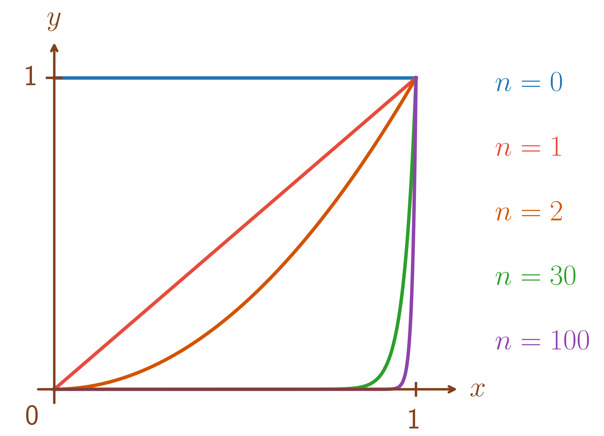
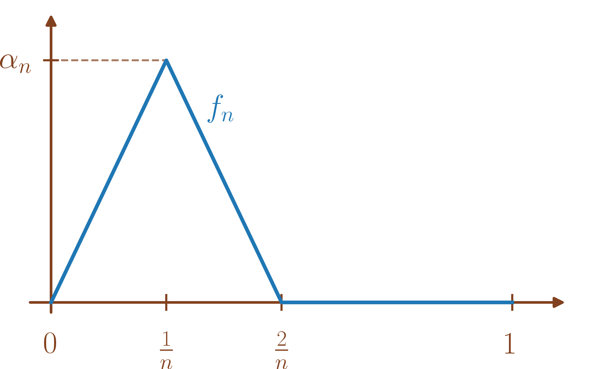
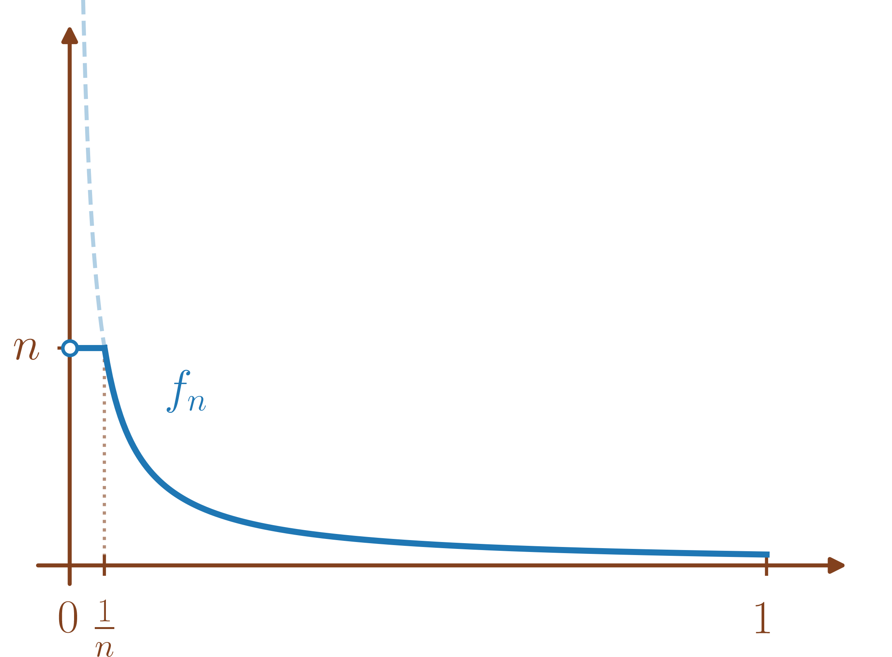
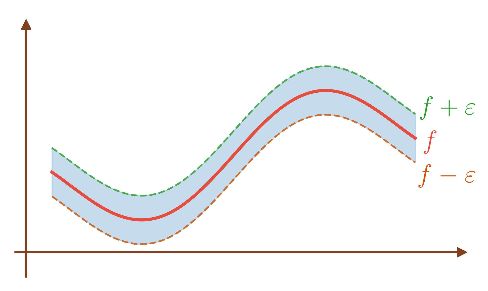
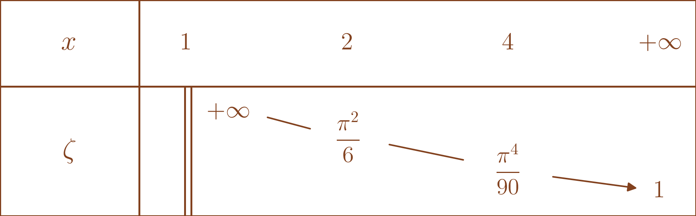
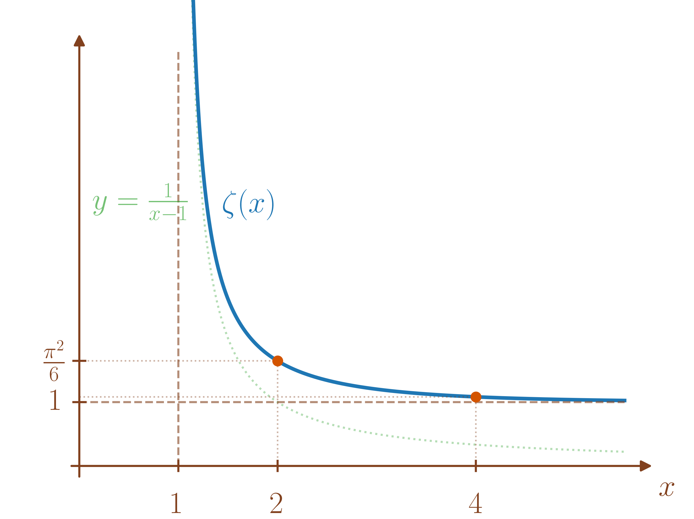
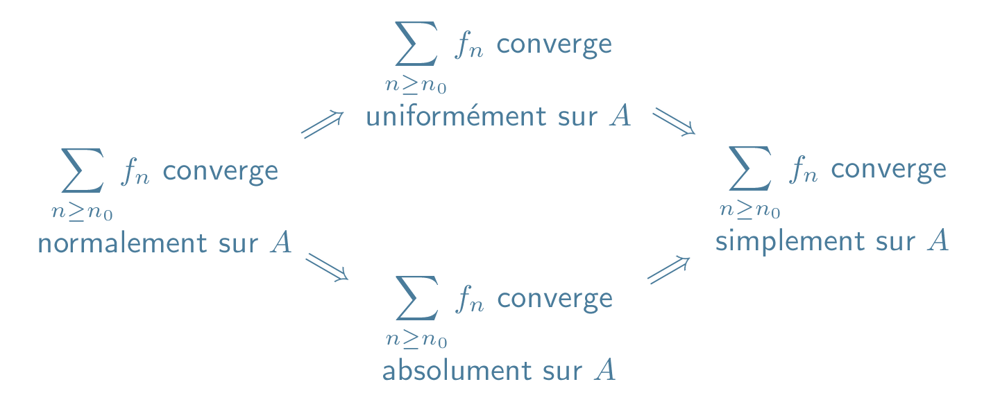
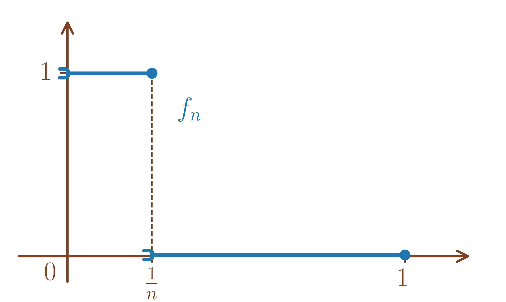
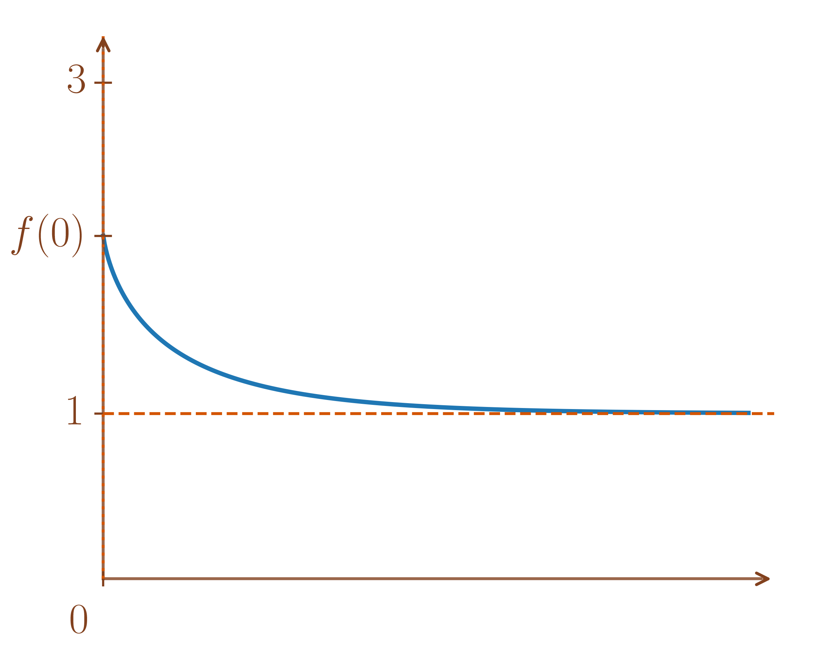
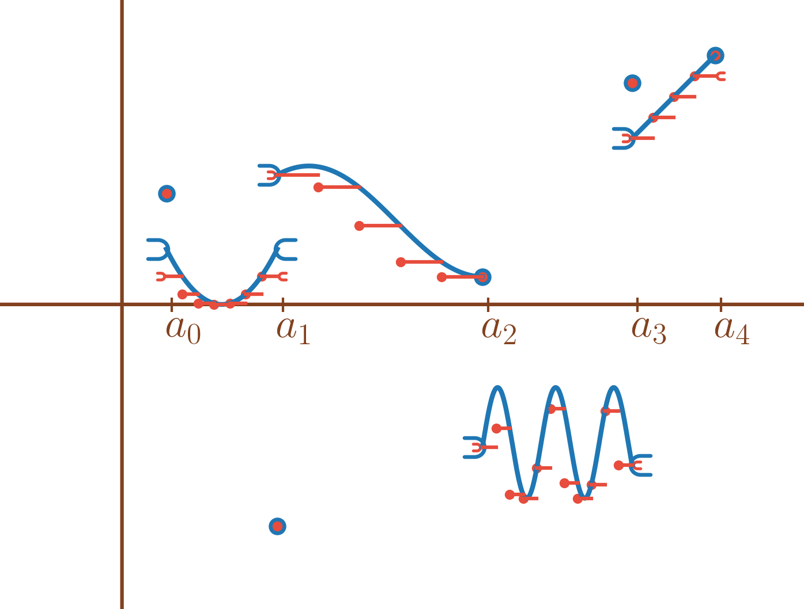

Dans tout le cours, \((E,\left\|\cdot\right\|)\) et \((F,\left\|\cdot\right\|)\) désigne deux \(\mathbb{K}\)-espaces vectoriels normés avec \(F\) de dimension finie et \(\mathbb{K}= \mathbb{R}\) ou \(\mathbb{C}.\) On note abusivement les normes sur \(E\) et sur \(F\) de la même façon.
Soient \(A \subset E\) et \(\left(f_n\right)_{n \geq 0}\) une suite de fonctions de \(A\) dans \(F\) tels que pour tout \(n \in \mathbb{N},\) \(f_n : x \in A \mapsto f_n(x) \in F.\)
Soit \(f: x \in A \mapsto f(x) \in F\) une fonction de \(A\) dans \(F,\) on dit que \(\left(f_n\right)_{n \geq 0}\) converge simplement vers \(f\) sur \(A\) si \[\begin{array}{ll} & \forall x \in A, f_n(x) \xrightarrow[n \to +\infty]{} f(x) \\ \text{ ie }& \forall x \in A, \left\|f_n(x)-f(x)\right\| \xrightarrow[n \to +\infty]{} 0. \end{array}\]
On note alors \(f_n \xrightarrow[{A}]{\text{CVS}} f\) ou \(f_n \xrightarrow[n \to +\infty]{\text{CVS}} f.\)
On propose deux exemples.
Pour \(n \in \mathbb{N},\) on pose \(\begin{array}{lllll} f_n & : & [0,1] & \to & \mathbb{R} \\ & & x & \mapsto & x^n \end{array} .\)
Alors, pour \(n \in \mathbb{N}\) et \(x\in [0,1],\)
\(f_n(x) = x^n \xrightarrow[n \to +\infty]{} \left\{ \begin{array}{ll} 0 & \mbox{si $x < 1$} \\ 1 & \mbox{si $x=1$} \end{array} \right..\)
Donc \(f_n \xrightarrow[{{[0,1]}}]{\text{CVS}} f\) avec \(\begin{array}{lllll} f & : & [0,1] & \to & \mathbb{R} \\ & & x & \mapsto & \left\{ \begin{array}{ll} 0 & \mbox{si $x < 1$} \\ 1 & \mbox{si $x=1$} \end{array} \right. \end{array} .\)

On considère une suite \((\alpha_n)_{n \geq 1}\) de réels strictement positifs et \(\left(f_n\right)_{n \geq 1}\) définie comme sur le dessin.
Autrement dit,
\(\begin{array}{lllll} f_n & : & [0,1] & \to & \mathbb{R} \\ & & x & \mapsto & \left\{ \begin{array}{ll} 0 & \mbox{si $x =0$} \\ \alpha_n & \mbox{si $x = \tfrac{1}{n}$} \\ & \\ 0 & \mbox{si $x \geq \tfrac{2}{n}$} \\ & \\ \text{affine} & \mbox{sur $\left[0,\tfrac{1}{n}\right]$ et $\left[\tfrac{1}{n},\tfrac{2}{n}\right]$} \\ \end{array} \right. \end{array} .\)

Alors, pour \(x \in [0,1], f_n(x) \xrightarrow[n \to +\infty]{} 0.\)
En effet, pour \(x \in ]0,1],\) il existe \(N \in \mathbb{N}^{\star}\) tel que \(\frac{2}{N} \leq x\) car \(\frac{2}{n} \xrightarrow[n \to +\infty]{} 0.\) Donc pour \(n \geq N,\) \(f_n(x) = 0\) et \(f_n(x) \xrightarrow[n \to +\infty]{} 0.\) Pour \(x = 0,\) on a pour tout \(n \in \mathbb{N}^{\star},\) \(f_n(0) = 0.\)
Donc \(f_n \xrightarrow[{[0,1]}]{\text{CVS}} 0.\)
Soient \(A \subset E\) et \(\left(f_n\right)_{n \geq 0}\) une suite de fonctions de \(A\) dans \(F\) qui converge simplement vers \(f\) sur \(A.\) Alors,
Si \(E=F=\mathbb{R},\) \(\forall n,\) \(f_n\) croissante \(\Longrightarrow\) \(f\) croissante,
Si \(E=F=\mathbb{R}\) et \(I\) un intervalle de \(\mathbb{R},\) \(\forall n,\) \(f_n\) convexe \(\Longrightarrow\) \(f\) convexe,
Si \(A\) est un sous-espace vectoriel de \(E,\) \(\forall n,\) \(f_n\) linéaire \(\Longrightarrow\) \(f\) linéaire,
Soient \(x,y \in A\) tels que \(x \leq y\) alors pour tout \(n \in \mathbb{N},\)
\[f_n(x) \leq f_n(y)\]
donc en passant à la limite quand \(n \to +\infty\) dans l’inégalité, \(f(x) \leq f(y)\) et \(f\) est croissante.
Soient \(x,y \in A\) et \(\lambda \in [0,1]\) alors pour tout \(n \in \mathbb{N},\)
\[f_n\left((1-\lambda)x+ \lambda y\right) \leq (1-\lambda)f_n(x)+ \lambda f_n(y)\]
donc en passant à la limite quand \(n \to +\infty\) dans l’inégalité, \(f\left((1-\lambda)x+ \lambda y\right) \leq (1-\lambda)f(x)+ \lambda f(y)\) et \(f\) est convexe.
Soient \(x,y \in A\) et \(\lambda,\mu \in \mathbb{K}\) alors pour tout \(n \in \mathbb{N},\)
\[f_n\left(\lambda x+ \mu y\right) = \lambda f_n(x)+ \mu f_n(y)\]
donc en considérant la limite quand \(n \to +\infty,\) \(f\left(\lambda x+ \mu y\right) = \lambda f(x)+ \mu f(y)\) et \(f\) est linéaire.
Soient \(A \subset E\) et \(\left(f_n\right)_{n \geq 0}\) une suite de fonctions de \(A\) dans \(F\) qui converge simplement vers \(f\) sur \(A.\) Alors,
\(\forall n \in \mathbb{N},\) \(f_n\) continue \(\centernot{\Longrightarrow}\) \(f\) continue,
\(\forall n \in \mathbb{N},\) \(f_n\) bornée \(\centernot{\Longrightarrow}\) \(f\) bornée.
Comme détaillé dans l’exemple [ex:fonction_x_puissance_n],
\(f_n : x \in [0,1] \mapsto x^n \xrightarrow[{[0,1]}]{\text{CVS}} \begin{array}{lllll} f & : & [0,1] & \to & \mathbb{R} \\ & & x & \mapsto & \left\{ \begin{array}{ll} 0 & \mbox{si $x < 1$} \\ 1 & \mbox{si $x=1$} \end{array} \right. \end{array}\) qui n’est pas continue.
Considérons pour \(n \in \mathbb{N},\) la fonction \(\begin{array}{lllll} f_n & : & ]0,1] & \to & \mathbb{R} \\ & & x & \mapsto & \left\{ \begin{array}{ll} n & \mbox{si $0 < x \leq \tfrac{1}{n}$} \\ \tfrac{1}{x} & \mbox{si $\tfrac{1}{n} < x < 1$} \end{array} \right. \end{array} .\)
Alors, on remarque que pour tout \(n \in \mathbb{N},\) pour tout \(x \in ]0,1],\) \(\left|f_n(x)\right| \leq n\) avec \(n\) qui ne dépend pas de \(x\) donc \(f_n\) est bornée.
Or, \(f_n \xrightarrow[{]0,1]}]{\text{CVS}} f\) avec \(f: x \in ]0,1] \mapsto \frac{1}{x}\) qui n’est pas bornée.
En effet, pour \(x \in ]0,1],\) il existe \(N \in \mathbb{N}\) tel que \(\frac{1}{N} \leq x\) car \(\frac{1}{n} \xrightarrow[n \to +\infty]{} 0.\) Donc pour \(n \geq N,\) \(f_n(x) = \frac{1}{x}\) et \(f_n(x) \xrightarrow[n \to +\infty]{} \frac{1}{x}.\)

En revanche, s’il existe \(M \in \mathbb{R}^{+}\) tel que pour tout \(n \in \mathbb{N},\) \(x \in A,\) \(\left\|f_n(x)\right\| \leq M,\) on a pour tout \(x \in A,\) \(\left\|f(x)\right\| \leq M\) donc \(f\) est bornée sur \(A\).
Soit \(A \subset E\) et \(f : A \to F,\) on pose \(\left\|f\right\|_{\infty,A} = \sup_{x \in A}\left\|f(x)\right\| \in [0,+\infty]\) (donc éventuellement \(=+\infty\)).
\(\left\|f\right\|_{\infty,A} < +\infty\) \(\iff\) \(f\) est bornée sur \(A,\)
\(\left\|f\right\|_{\infty,A} =0\) \(\iff\) \(f\) est nulle sur \(A,\)
Si \(f\) et \(g\) sont bornées sur \(A\) alors, \[\begin{aligned} \left\|f+g\right\|_{\infty,A} & \leq \left\|f\right\|_{\infty,A}+\left\|g\right\|_{\infty,A} \\ \forall \lambda \in \mathbb{K}, \left\|\lambda f\right\|_{\infty,A}& =\left|\lambda\right|\left\|f\right\|_{\infty,A} \\ \left\|f\pm g\right\|_{\infty,A} & \geq \left|\left\|f\right\|_{\infty,A}-\left\|g\right\|_{\infty,A}\right| \end{aligned}\]
Si \(F = \mathbb{K}\) et \(f,g\) sont bornées, \[\left\|fg\right\|_{\infty,A} \leq \left\|f\right\|_{\infty,A}\left\|g\right\|_{\infty,A}\]
Soient \(A \subset E\) et \(\left(f_n\right)_{n \geq 0}\) une suite de fonctions de \(A\) dans \(F.\)
Soit \(f\) une fonction de \(A\) dans \(F,\) on dit que \(\left(f_n\right)_{n \geq 0}\) converge uniformément vers \(f\) sur \(A\) si \[\begin{array}{ll} & \left\|f_n-f\right\|_{\infty,A} \xrightarrow[n \to +\infty]{} 0 \\ \text{ ie }& \forall \varepsilon >0, \exists N \in \mathbb{N}/ \forall n \geq N, \left\|f_n-f\right\|_{\infty,A} \leq \varepsilon \\ \text{ ie }& \forall \varepsilon >0, \exists N \in \mathbb{N}/ \forall n \geq N, \forall x \in A, \left\|f_n(x)-f(x)\right\| \leq \varepsilon. \end{array}\]
On note alors \(f_n \xrightarrow[{A}]{\text{CVU}} f\) ou \(f_n \xrightarrow[n \to +\infty]{\text{CVU}} f.\)
La convergence simple de \(\left(f_n\right)\) vers \(f\) peut s’écrire : \[\forall x \in A, \forall \varepsilon >0, \exists N \in \mathbb{N}/ \forall n \geq N, \left\|f_n(x)-f(x)\right\| \leq \varepsilon.\] Autrement dit, contrairement à la convergence uniforme le « \(N\) » dépend de \(x.\)
Soient \(A \subset E,\) \(\left(f_n\right)_{n \geq 0}\) une suite de fonctions de \(A\) dans \(F\) et \(f\) une fonction de \(A\) dans \(F.\)
Alors, \[f_n \xrightarrow[{A}]{\text{CVU}} f \Longrightarrow f_n \xrightarrow[{A}]{\text{CVS}} f.\]
Si \(f_n \xrightarrow[{A}]{\text{CVU}} f,\) soit \(x \in A,\) alors \[\left\|f_n(x)-f(x)\right\| \leq \left\|f_n-f\right\|_{\infty,A} \xrightarrow[n \to +\infty]{} 0\] donc \(f_n \xrightarrow[{A}]{\text{CVS}} f.\)
La réciproque est fausse. En reprenant les deux exemples de [ex:fonction_x_puissance_n], on a
Pour le premier, \(\left\|f_n-f\right\|_{\infty,[0,1]} = \sup_{x \in [0,1[} x^n = 1 \centernot{\xrightarrow[n \to +\infty]{}} 0.\)
Pour le deuxième, \(\left\|f_n-f\right\|_{\infty,[0,1]} = \left\|f_n\right\|_{\infty,[0,1]} = \alpha_n\) donc si \(\alpha_n \centernot{\xrightarrow[n \to +\infty]{}} 0,\) on a \(\left\|f_n-f\right\|_{\infty,[0,1]}\centernot{\xrightarrow[n \to +\infty]{}} 0.\)
Soit \(B \subset A,\) on a \(\left\|f\right\|_{\infty,B} \leq \left\|f\right\|_{\infty,A}\) donc \(f_n \xrightarrow[{A}]{\text{CVU}} f \Longrightarrow f_n \xrightarrow[{B}]{\text{CVU}} f.\)
En revanche, en reconsidérant \(\left(f_n\right)_{n \geq 0}\) telle que \(f_n : x \in [0,1] \mapsto x^n,\) pour \(0 \leq a < 1,\) on a \(\left\|f_n\right\|_{\infty,[0,a]} = \sup_{x \in [0,a]} x^n = a^n \xrightarrow[n \to +\infty]{} 0\) et \([0,1[ = \bigcup_{0 \leq a < 1} [0,a]\) mais \(\left\|f_n\right\|_{\infty,[0,1[}=1 \centernot{\xrightarrow[n \to +\infty]{}} 0.\)
Si \(F = \mathbb{R},\)
\[\begin{aligned} f_n \xrightarrow[{A}]{\text{CVU}} f & \iff \forall \varepsilon >0, \exists N \in \mathbb{N}/ \forall n \geq N, \forall x \in A, \left|f_n(x)-f(x)\right| \leq \varepsilon \\ & \iff \forall \varepsilon >0, \exists N \in \mathbb{N}/ \forall n \geq N, \forall x \in A, -\varepsilon \leq {f_n(x)-f(x)} \leq \varepsilon. \end{aligned}\] Donc à partir d’un certain rang, les fonctions \(f_n\) se retrouvent dans un tube comme celui représenté ci-dessous. On comprend alors la non-convergence uniforme des exemples de [ex:fonction_x_puissance_n].

Soient \(A \subset E,\) \(\left(f_n\right)_{n \geq 0}\) une suite de fonctions de \(A\) dans \(F\) et \(f\) une fonction de \(A\) dans \(F\) telles que \(f_n \xrightarrow[{A}]{\text{CVU}} f.\)
Alors, \[\forall n \in \mathbb{N}, f_n \text{ est bornée sur $A$} \Longrightarrow f \text{ est bornée sur $A$}.\] De plus, dans ce cas, \(\left\|f_n\right\|_{\infty,A} \xrightarrow[n \to +\infty]{} \left\|f\right\|_{\infty,A}.\)
Avec \(\varepsilon = 1,\) il existe \(N \in \mathbb{N}\) tel que pour tout \(n \geq N,\) \(\left\|f_n-f\right\|_{\infty,A} \leq 1.\)
On a donc \[\left\|f\right\|_{\infty,A} = \left\|f-f_N+f_N\right\|_{\infty,A} \leq \left\|f-f_N\right\|_{\infty,A}+\left\|f_N\right\|_{\infty,A} \leq 1+\left\|f_N\right\|_{\infty,A} < +\infty\]
et \(f\) est bornée sur \(A.\)
De plus, \[\left|\left\|f_n\right\|_{\infty,A}-\left\|f\right\|_{\infty,A}\right| \leq \left\|f_n-f\right\|_{\infty,A}\xrightarrow[n \to +\infty]{} 0.\]
Soient \(A \subset E\) et \(\left(f_n\right)_{n \geq 0}\) une suite de fonctions de \(A\) dans \(F,\) \(f\) une fonction de \(A\) dans \(F\) telles que \(f_n \xrightarrow[{A}]{\text{CVU}} f.\)
On suppose \(f\) bornée. Montrer que les fonctions \(f_n\) sont bornées sur \(A\) à partir d’un certain rang.
Avec \(\varepsilon = 1,\) il existe \(N \in \mathbb{N}\) tel que pour tout \(n \geq N,\) \(\left\|f_n-f\right\|_{\infty,A} \leq 1.\)
Donc pour tout \(n \geq N,\)
\[\left\|f_n\right\|_{\infty,A} = \left\|f_n-f+f\right\|_{\infty,A} \leq \left\|f_n-f\right\|_{\infty,A}+\left\|f\right\|_{\infty,A} \leq 1+\left\|f\right\|_{\infty,A} < +\infty.\]
On en déduit que \(f_n\) est bornée sur \(A\) pour \(n \geq N.\)
Soient \(A \subset E,\) \(\left(f_n\right)_{n \geq 0},\) \(\left(g_n\right)_{n \geq 0}\) deux suites de fonctions de \(A\) dans \(F\) et \(f,g\) deux fonctions de \(A\) dans \(F\) telles que \(f_n \xrightarrow[{A}]{\text{CVU}} f\) et \(g_n \xrightarrow[{A}]{\text{CVU}} g.\)
Alors, pour \(\lambda, \mu \in \mathbb{K},\) \(\lambda f_n+\mu g_n \xrightarrow[{A}]{\text{CVU}} \lambda f+\mu g.\)
On a \[\begin{aligned} \left\|\lambda f_n+\mu g_n-\left(\lambda f+\mu g\right)\right\|_{\infty,A} & = \left\|\lambda\left(f_n-f\right)+\mu \left(g_n-g\right)\right\|_{\infty,A}\\ & \leq \left|\lambda\right|\underbrace{\left\|f_n-f\right\|_{\infty,A}}_{\xrightarrow[n \to +\infty]{} 0} + \left|\mu\right|\underbrace{\left\|g_n-g\right\|_{\infty,A}}_{\xrightarrow[n \to +\infty]{} 0} \xrightarrow[n \to +\infty]{} 0. \end{aligned}\]
Si \(F = \mathbb{K},\) \[\left.\begin{array}{l} f_n \xrightarrow[{A}]{\text{CVU}} f \\ g_n \xrightarrow[{A}]{\text{CVU}} g \end{array}\right\} \centernot{\Longrightarrow} f_ng_n \xrightarrow[{A}]{\text{CVU}} fg.\]
On considère \(\left(f_n\right)_{n \geq 0}, \left(g_n\right)_{n \geq 0}\) telles que pour \(n \in \mathbb{N},\) \(\begin{array}{lllll} f_n & : & \mathbb{R} & \to & \mathbb{R} \\ & & x & \mapsto & x+\frac{1}{n} \end{array}\) et \(g_n = f_n.\)
Alors, soit \(\begin{array}{lllll} f & : & \mathbb{R} & \to & \mathbb{R} \\ & & x & \mapsto & x \end{array} ,\) \(f_n \xrightarrow[{\mathbb{R}}]{\text{CVU}} f.\) En effet, \(\left\|f_n-f\right\|_{\infty,\mathbb{R}} = \frac{1}{n} \xrightarrow[n \to +\infty]{} 0.\)
Maintenant, pour \(n \in \mathbb{N},\) \(\begin{array}{lllll} f_ng_n & : & \mathbb{R} & \to & \mathbb{R} \\ & & x & \mapsto & \left(x+\frac{1}{n}\right)^2 = x^2+2\frac{x}{n}+\frac{1}{n^2} \end{array} .\)
et \(\left\|f_ng_n-f^2\right\|_{\infty,\mathbb{R}} \geq \left|f_ng_n-f^2\right|(n^2) = 2n+\frac{1}{n^2} \xrightarrow[n \to +\infty]{} +\infty\) donc \(f_ng_n \centernot{\xrightarrow[{A}]{\text{CVU}}} f^2\) (et même \(f_ng_n \centernot{\xrightarrow[{A}]{\text{CVS}}} f^2\)).
Soient \(A \subset E,\) \(\left(f_n\right)_{n \geq 0},\) \(\left(g_n\right)_{n \geq 0}\) deux suites de fonctions de \(A\) dans \(\mathbb{K}\) et \(f,g\) deux fonctions de \(A\) dans \(\mathbb{K}\) telles que \(f_n \xrightarrow[{A}]{\text{CVU}} f\) et \(g_n \xrightarrow[{A}]{\text{CVU}} g.\)
On suppose : pour tout \(n \in \mathbb{N},\) \(f_n\) et \(g_n\) sont bornées sur \(A.\) Montrer \(f_ng_n \xrightarrow[{A}]{\text{CVU}} fg.\)
D’abord, par la proposition [prop:CVU_bornees], \(f\) et \(g\) sont bornées et \(\left\|f_n\right\|_{\infty,A} \xrightarrow[n \to +\infty]{} \left\|f\right\|_{\infty,A}.\)
Puis, pour \(n \in \mathbb{N},\) \[\begin{aligned} \left\|f_ng_n-fg\right\|_{\infty,A} & = \left\|f_n(g_n-g+g)-fg\right\|_{\infty,A} \\ & = \left\|f_n(g_n-g)+g(f_n-f)\right\|_{\infty,A} \\ & \leq \underbrace{\left\|f_n\right\|_{\infty,A}}_{\xrightarrow[n \to +\infty]{} \left\|f\right\|_{\infty,A}}\underbrace{\left\|g_n-g\right\|_{\infty,A}}_{\xrightarrow[n \to +\infty]{} 0}+\underbrace{\left\|g\right\|_{\infty,A}}_{< +\infty}\underbrace{\left\|f_n-f\right\|_{\infty,A}}_{\xrightarrow[n \to +\infty]{} 0} \xrightarrow[n \to +\infty]{} 0. \end{aligned}\]
Soient \(A \subset E,\) \(f\) une fonction de \(A\) dans \(F\) et \(a \in \overline{A}\) (avec éventuellement \(a = \pm \infty\)). \[f(x) \xrightarrow[\substack{x \to a\\ {x \in A}}]{} \ell \in F \iff \begin{array}{lllll} & \forall \varepsilon >0,& \exists W \in \mathcal{V}(a) / &\forall x \in W\cap A, &\left\|f(x)-\ell\right\| \leq \varepsilon \\ \text{ ie }& \forall V \in \mathcal{V}(\ell), &\exists W \in \mathcal{V}(a) / &\forall x \in W\cap A, & f(x) \in V. \end{array}\] On note aussi alors \(\ell = \underset{\substack{x \to a \\ x \in A}}{\lim} f(x).\)
Soient \(A \subset E\) et \(\left(f_n\right)_{n \geq 0}\) une suite de fonctions de \(A\) dans \(F.\) Tout l’objet de cette partie est de se demander \[\text{A-t-on } \text{ «~} \underset{n \to +\infty}{\lim}\left(\underset{\substack{x \to a \\ x \in A}}{\lim} f_n(x)\right) = \underset{\substack{x \to a \\ x \in A}}{\lim}\left(\underset{n \to +\infty}{\lim} f_n(x)\right) \text{ ~»} ?\]
En général, la réponse est non.
Pour \(n \in \mathbb{N}^{\star},\) on pose \(\begin{array}{lllll} f_n & : & \mathbb{R}^{+} & \to & \mathbb{R} \\ & & x & \mapsto & \frac{x}{x+n} \end{array} .\)
Alors, pour \(n \in \mathbb{N}^{\star},\) \(\underset{x \to +\infty}{\lim} f_n(x) = 1\) donc \(\underset{n \to +\infty}{\lim}\Big(\underset{x \to +\infty}{\lim} f_n(x)\Big) = 1.\)
En revanche, pour \(x \in \mathbb{R}^{+},\) \(\underset{n \to +\infty}{\lim} f_n(x)= 0\) puis \(\underset{x \to +\infty}{\lim}\left(\underset{n \to +\infty}{\lim} f_n(x)\right) = 0 \neq 1.\)
Pour \(n \in \mathbb{N}^{\star},\) on pose \(\begin{array}{lllll} f_n & : & \mathbb{R}^{+} & \to & \mathbb{R} \\ & & x & \mapsto & \frac{\sqrt{n}x}{x+n} \end{array} .\)
Alors, pour \(n \in \mathbb{N}^{\star},\) \(\underset{x \to +\infty}{\lim} f_n(x) = \sqrt{n}\) donc \(\underset{n \to +\infty}{\lim}\Big(\underset{x \to +\infty}{\lim} f_n(x)\Big) = +\infty.\)
En revanche, pour \(x \in \mathbb{R}^{+},\) \(\underset{n \to +\infty}{\lim} f_n(x)= 0\) puis \(\underset{x \to +\infty}{\lim}\left(\underset{n \to +\infty}{\lim} f_n(x)\right) = 0 \neq +\infty.\)
Pour \(n \in \mathbb{N},\) on pose \(\begin{array}{lllll} f_n & : & [0,1[ & \to & \mathbb{R} \\ & & x & \mapsto & x^n \end{array} .\)
Alors, pour \(n \in \mathbb{N},\) \(\underset{\substack{x \to 1 \\ x \in [0,1[}}{\lim} f_n(x) = 1\) donc \(\underset{n \to +\infty}{\lim}\Big(\underset{\substack{x \to 1 \\ x \in [0,1[}}{\lim} f_n(x)\Big) = 1.\)
En revanche, pour \(x \in [0,1[,\) \(f_n(x) = x^n\) donc \(\underset{n \to +\infty}{\lim} f_n(x)= 0\) puis \(\underset{\substack{x \to 1 \\ x \in [0,1[}}{\lim}\left(\underset{n \to +\infty}{\lim} f_n(x)\right) = 0 \neq 1.\)
Si on avait considérer \(\begin{array}{lllll} f_n & : & [0,1] & \to & \mathbb{R} \\ & & x & \mapsto & x^n \end{array} ,\) \(\underset{\substack{x \to 1 \\ x \in [0,1]}}{\lim} f_n(x)\) ne serait pas défini.
Les suites de Cauchy sont hors programme mais rendent la preuve du théorème de la double-limite plus courte. On présente leurs propriétés sous forme d’exercice.
Soit \((E,\left\|\cdot\right\|)\) un \(\mathbb{K}\)-espace vectoriel normé.
Soit \(\left(x_n\right)_{n \geq 0}\) une suite de \(E.\) On dit que \(\left(x_n\right)\) est une suite de Cauchy si \[\forall \varepsilon >0, \exists N \in \mathbb{N}/ \forall n,m \geq N, \left\|x_n-x_m\right\| \leq \varepsilon.\]
Montrer que si \(\left(x_n\right)\) est une suite de Cauchy alors \(\left(x_n\right)\) est bornée.
Soit \(\left(x_n\right)_{n \geq 0}\) une suite de \(E\) telle que \(x_n \xrightarrow[n \to +\infty]{} \ell \in E.\) Montrer que \(\left(x_n\right)\) est une suite de Cauchy.
Soit \(\left(x_n\right)_{n \geq 0}\) une suite de Cauchy de \(E\) et \(\ell \in E\) une valeur d’adhérence de \(\left(x_n\right).\) Montrer \(x_n \xrightarrow[n \to +\infty]{} \ell.\)
Si \(E\) est de dimension finie, montrer que toute suite de Cauchy de \(E\) converge.
Avec \(\varepsilon = 1,\) il existe \(N \in \mathbb{N}\) tel que pour tout \(n,m \geq N, \left\|x_n-x_m\right\| \leq 1.\)
Donc, pour tout \(n \geq N,\) \[\left\|x_n\right\|=\left\|x_n-x_N+x_N\right\| \leq \left\|x_n-x_N\right\|+\left\|x_N\right\| \leq 1+\left\|x_N\right\|.\]
Soit \(\varepsilon >0,\) il existe \(N \in \mathbb{N}\) tel que pour tout \(n \geq N, \left\|x_n-\ell\right\| \leq \frac{\varepsilon}{2}.\)
Donc pour tout \(n,m \geq N,\) \[\left\|x_n-x_m\right\| = \left\|x_n-\ell+\ell-x_m\right\| \leq \left\|x_n-\ell\right\|+\left\|\ell-x_m\right\| \leq \frac{\varepsilon}{2}+\frac{\varepsilon}{2}= \varepsilon.\]
Soit \(\varepsilon,\) il existe \(N \in \mathbb{N}\) tel que pour tout \(n,m \geq N, \left\|x_n-x_m\right\| \leq \varepsilon.\)
Or, comme \(\ell\) est valeur d’adhérence de \(\left(x_n\right),\) il existe \(N' \geq N\) tel que \(\left\|x_{N'}-\ell\right\| \leq \varepsilon.\)
On a donc pour tout \(n \geq N,\) \[\left\|x_n-\ell\right\| = \left\|x_n-x_{N'}+x_{N'}-\ell\right\| \leq \left\|x_n-x_{N'}\right\|+\left\|x_{N'}-\ell\right\| \leq 2\varepsilon\] ie \(x_n \xrightarrow[n \to +\infty]{} \ell.\)
Soit \(\left(x_n\right)\) une suite de Cauchy de \(E.\)
Alors, par la question 1., \(\left(x_n\right)\) est bornée.
Donc par le théorème de Bolzano-Weierstrass (\(E\) est de dimension finie), \(\left(x_n\right)\) admet une valeur d’adhérence \(\ell \in E.\)
Donc par la question 3., \(x_n \xrightarrow[n \to +\infty]{} \ell.\)
(Théorème de la double-limite) Soient \(A \subset E,\) \(\left(f_n\right)_{n \geq 0}\) une suite de fonctions de \(A\) dans \(F\) et \(f\) une fonction de \(A\) dans \(F.\)
Soit \(a \in \overline{A}\) ou \(a=\pm \infty.\) Si
\(f_n \xrightarrow[{A}]{\text{CVS}} f,\)
\(\forall n \in \mathbb{N},\) \(f_n(x) \xrightarrow[\substack{x \to a\\ {x \in A}}]{} \ell_n \in F,\)
\(\left(f_n\right)\) converge uniformément vers \(f\) au voisinage (dans \(A\)) de \(a,\)
ie \(\exists W \in \mathcal{V}(a) / \left\|f_n-f\right\|_{\infty,W \cap A} \xrightarrow[n \to +\infty]{} 0.\)
Alors,
\(\left(\ell_n\right)\) converge vers une limite \(\ell \in F\)
et \(f(x) \xrightarrow[\substack{x \to a\\ {x \in A}}]{} \ell,\)
ie \[\underset{n \to +\infty}{\lim}\left(\underset{\substack{x \to a \\ x \in A}}{\lim} f_n(x)\right) = \underset{\substack{x \to a \\ x \in A}}{\lim}\left(\underset{n \to +\infty}{\lim} f_n(x)\right).\]
Commençons par montrer que \(\left(\ell_n\right)\) converge.
Soit \(\varepsilon > 0,\) il existe \(W \in \mathcal{V}(a)\) et \(N \in \mathbb{N}\) tel que pour tout \(n \geq N,\) \(\left\|f_n-f\right\|_{\infty,W \cap A} \leq \tfrac{\varepsilon}{2}.\)
ie \(\forall n \geq N,\) \(\forall x \in W \cap A,\) \(\left\|f_n(x)-f(x)\right\| \leq \tfrac{\varepsilon}{2}.\)
On a donc pour tout \(n,m \geq N,\) \(\forall x \in W \cap A,\) \[\left\|f_n(x)-f_m(x)\right\| \leq \left\|f_n(x)-f(x)\right\|+\left\|f(x)-f_m(x)\right\| \leq \varepsilon.\] Puis en prenant la limite quand \(x \to a,\) \[\forall n,m \geq N, \left\|\ell_n-\ell_m\right\|\leq \varepsilon.\] Alors, \(\left(\ell_n\right)\) est une suite de Cauchy et comme \(F\) est de dimension finie, \(\left(\ell_n\right)\) converge (voir l’exercice [exoc:suites_de_Cauchy]).
Montrons maintenant \(f(x) \xrightarrow[\substack{x \to a\\ {x \in A}}]{} \ell.\)
Pour \(n \in \mathbb{N}\) et \(x \in A,\) \[\left\|f_n(x)-\ell\right\| \leq \left\|f(x)-f_n(x)\right\|+\left\|f_n(x)-\ell_n\right\|+\left\|\ell_n-\ell\right\|.\] De plus, soit \(\varepsilon >0,\) \[\begin{aligned} & \exists N_1 \in \mathbb{N}/ \forall n \geq N_1, \left\|\ell_n-\ell\right\| \leq \varepsilon, \\ \exists W_1 \in \mathcal{V}(a),& \exists N_2 \in \mathbb{N}/ \forall n \geq N_2, \forall x \in W_1 \cap A, \left\|f(x)-f_n(x)\right\| \leq \varepsilon. \\ \end{aligned}\]
Donc pour \(N= \max(N_1,N_2),\) pour tout \(x \in W_1 \cap A,\) \[\left\|f_N(x)-\ell\right\| \leq \varepsilon +\left\|f_N(x)-\ell_N\right\|+\varepsilon.\] Or, \(f_N(x) \xrightarrow[\substack{x \to a\\ {x \in A}}]{} \ell_N,\) donc il existe \(W_2 \in \mathcal{V}(a)\) tel que pour tout \(x \in W_2 \cap A,\) \(\left\|f_N(x)-\ell_N\right\| \leq \varepsilon.\)
Donc pour tout \(x \in W_1 \cap W_2 \cap A,\) \(\left\|f(x)-\ell\right\| \leq 3\varepsilon\) et \(f(x) \xrightarrow[\substack{x \to a\\ {x \in A}}]{} \ell.\)
(Voir le cours sur les espaces vectoriels normés)
Soient \((E,\left\|\cdot\right\|),\) \((F,N(\cdot))\) deux espaces vectoriels normés, \(A \subset E\) et \(f : A \to F.\)
Soit \(B \subset A,\) on dit que \(f\) est continue sur \(B\) si \(f_{\mid B}\) est continue.
En particulier, on a \(f\) continue sur \(B\) si et seulement si pour tout \(b \in B,\) \[f(x) \xrightarrow[\substack{x \to b\\ {x \in B}}]{} f(b).\]
\(f\) continue sur \(B\) \(\centernot{\Longrightarrow}\) \(f\) est continue en tout point de \(B.\)
Par exemple, \(\begin{array}{lllll} f & : & [0,2] & \to & \mathbb{R} \\ & & x & \mapsto & \left\{\begin{array}{ll} 1 & \mbox{ si $0 \leq x \leq 1$} \\ 2 & \mbox{ $1 < x \leq 2$} \end{array}\right. \end{array}\) est continue sur \([0,1]\) car constante mais \(f\) n’est pas continue en \(1.\)

Soient \((E,\left\|\cdot\right\|),\) \((F,N(\cdot))\) deux espaces vectoriels normés, \(A \subset E\) et \(f : A \to F.\)
\[\text{$f$ continue sur tout compact de $A$} \Longrightarrow \text{$f$ continue sur $A.$}\]
Soient \(A \subset E,\) \(\left(f_n\right)_{n \geq 0}\) une suite de fonctions de \(A\) dans \(F\) et \(f\) une fonction de \(A\) dans \(F.\)
Alors, \[\left.\begin{array}{ll} & \forall n \in \mathbb{N}, f_n \text{ est continue sur $A$} \\ & f_n \xrightarrow[{A}]{\text{CVU}} f \end{array}\right\} \Longrightarrow f \text{ est continue sur $A.$}\]
Utilisons le théorème de la double-limite. Soit \(a \in A,\)
\(f_n \xrightarrow[{A}]{\text{CVU}} f\) donc \(f_n \xrightarrow[{A}]{\text{CVS}} f,\)
Soit \(n \in \mathbb{N},\) \(f_n(x) \xrightarrow[\substack{x \to a\\ {x \in A}}]{} f_n(a),\)
\(f_n \xrightarrow[{A}]{\text{CVU}} f\) donc converge uniformément vers \(f\) localement en \(a\) aussi.
Or, \(f_n(a) \xrightarrow[n \to +\infty]{} f(a)\) par convergence simple donc par le théorème de la double-limite (théorème [thm:double_limite]), \(f(x) \xrightarrow[\substack{x \to a\\ {x \in A}}]{} f(a)\) et \(f\) est continue sur \(A.\)
On peut remplacer l’hypothèse « \(f_n \xrightarrow[{A}]{\text{CVU}} f\) » par « Pour tout \(a \in A,\) \(f_n\) converge uniformément vers \(f\) au voisinage de \(a\) » et le théorème de la double limite s’applique toujours dans la preuve.
Soient \(A \subset E,\) \(\left(f_n\right)_{n \geq 0}\) une suite de fonctions de \(A\) dans \(F\) et \(f\) une fonction de \(A\) dans \(F.\)
Alors, \[\left.\begin{array}{ll} & \forall n \in \mathbb{N}, f_n \text{ est continue sur $A$} \\ & \text{Pour toute partie compacte $B$ de $A,$ } f_n \xrightarrow[{B}]{\text{CVU}} f \end{array}\right\} \Longrightarrow f \text{ est continue sur $A.$}\]
Par le corollaire [cor:double_limite_donne_continuite], \(f\) est continue sur tout compact de \(A\) donc par la proposition [prop:continue_sur_tout_compact], \(f\) est continue sur \(A.\)
Si \(A\) est compacte,
\(\text{«~Pour toute partie compacte $B$ de $A,$ } f_n \xrightarrow[{B}]{\text{CVU}} f \text{~»} \iff f_n \xrightarrow[{A}]{\text{CVU}} f\).
(en prenant \(B = A\)).
Soit \(A\) un compact de \(E\) alors pour rappel, \(\mathscr{C}(A,F) \subset \mathscr{B}(A,F)\) (les fonctions bornées de \(A\) dans \(F\)). Le corollaire [cor:double_limite_donne_continuite] dit que \(\mathscr{C}(A,F)\) est un fermé de \(\mathscr{B}(A,F)\) pour \(\left\|\cdot\right\|_\infty.\)
(Très très important en pratique) Soient \(I \subset \mathbb{R}\) un intervalle de \(\mathbb{R}\), \(\left(f_n\right)_{n \geq 0}\) une suite de fonctions de \(I\) dans \(F\) et \(f\) une fonction de \(I\) dans \(F.\)
Alors, \[\left.\begin{array}{ll} & \forall n \in \mathbb{N}, f_n \text{ est continue sur $I$} \\ & \text{Pour tout segment $[a,b] \subset I$ ($a \leq b$), } f_n \xrightarrow[{[a,b]}]{\text{CVU}} f \end{array}\right\} \Longrightarrow f \text{ est continue sur $I.$}\]
Par le corollaire [cor:tout_compact_CVU_donc_continue_suite], il suffit de montrer \[\begin{array}{c} \text{Pour toute partie compacte $B$ de $I,$} \\ f_n \xrightarrow[{B}]{\text{CVU}} f \end{array} \iff \begin{array}{c} \text{Pour tout segment $[a,b] \subset I$ ($a \leq b$),} \\ f_n \xrightarrow[{[a,b]}]{\text{CVU}} f \end{array}\]
\((\Longrightarrow)\) est clair car les segments \([a,b]\) (\(a \leq b\)) sont des compacts de \(I.\)
\((\Longleftarrow)\) Soit \(B \subset I\) un compact de \(I.\)
Alors, \(B\) est bornée et fermée donc \(B\) admet un minimum et un maximum et \(B \subset \left[\min(B),\max(B)\right].\)
De plus, \(\left[\min(B),\max(B)\right] \subset I\) car \(I\) est un intervalle de \(\mathbb{R}\) et \(\min(B),\max(B) \in I\) car \(B \subset I.\)
On a donc \(f_n \xrightarrow[{[\min(B),\max(B)]}]{\text{CVU}} f\) puis \(f_n \xrightarrow[{B}]{\text{CVU}} f.\)
Si \(I = ]b,+\infty[\) (ou \(I =]-\infty,b[\)) alors la convergence sur tout intervalle \([a,+\infty[ \subset ]b,+\infty[\) (ou \(]-\infty,a] \subset ]-\infty,b[\)) implique la convergence sur tout segment de \(I.\)
Si \(I\) est un segment,
\(\text{pour tout segment $[a,b]$ de $I,$ } f_n \xrightarrow[{[a,b]}]{\text{CVU}} f \iff f_n \xrightarrow[{I}]{\text{CVU}} f\) (en prenant \([a,b] = I\)).
La convergence uniforme sur tout compact ou tout segment de \(I\) n’implique pas la convergence uniforme sur \(I.\)
Pour \(n \in \mathbb{N},\) on pose \(\begin{array}{lllll} f_n & : & [0,1[ & \to & \mathbb{R} \\ & & x & \mapsto & x^n \end{array}\) et \(I = [0,1[.\)
Alors, soit \([a,b] \subset I\) (\(a \leq b\)) alors \(b \in I\) donc \(b < 1.\)
On a donc \(\left\|f_n\right\|_{\infty,[a,b]} = b^n \xrightarrow[n \to +\infty]{} 0.\) on a alors \(f_n\) qui converge uniformément vers \(0\) sur tout segment donc tout compact de \(I.\)
Cependant, \(\left\|f_n\right\|_{\infty,I} = \left\|f_n\right\|_{\infty,[0,1[} = 1 \centernot{\xrightarrow[n \to +\infty]{}} 0.\)
Soient \([a,b]\) un segment de \(\mathbb{R},\) \(\left(f_n\right)_{n \geq 0}\) une suite de fonctions de \(\mathscr{C}_{\mathrm{m}}(\left[a,b\right],\mathbb{K})\) et \(f\) une fonction de \(\mathscr{C}_{\mathrm{m}}(\left[a,b\right],\mathbb{K}).\) Alors, \[\forall t \in [a,b], f_n(t) \xrightarrow[n \to +\infty]{} f(t) \centernot{\Longrightarrow} \int_a^b f_n(t) \xrightarrow[n \to +\infty]{} \int_a^b f(t)dt.\]
Reconsidérons le deuxième exemple de [ex:fonction_x_puissance_n]. On considère une suite \((\alpha_n)_{n \geq 1}\) de réels strictement positifs et \(\left(f_n\right)_{n \geq 1}\) définie comme ci-contre.
Autrement dit,
\(\begin{array}{lllll} f_n & : & [0,1] & \to & \mathbb{R} \\ & & x & \mapsto & \left\{ \begin{array}{ll} 0 & \mbox{si $x =0$} \\ \alpha_n & \mbox{si $x = \tfrac{1}{n}$} \\ & \\ 0 & \mbox{si $x \geq \tfrac{2}{n}$} \\ & \\ \text{affine} & \mbox{sur $\left[0,\tfrac{1}{n}\right]$ et $\left[\tfrac{1}{n},\tfrac{2}{n}\right]$} \\ \end{array} \right. \end{array} .\)
Alors, on a montré \(f_n \xrightarrow[{[0,1]}]{\text{CVS}} 0\) donc pour tout \(t \in [0,1], f_n(t) \xrightarrow[n \to +\infty]{} 0.\)
Cependant, pour \(n \in \mathbb{N}^{\star},\) \(\int_0^1f_n(t)dt\) se calcule comme l’aire d’un triangle tel que \(\int_0^1f_n(t)dt = \frac{\mathrm{base} \times \mathrm{hauteur}}{2} = \frac{\alpha_n}{n}.\)
Donc avec \(\alpha_n = n\) pour tout \(n \in \mathbb{N}^{\star},\) on a \(\int_0^1f_n(t)dt=1\) tandis que \(\int_0^1 0dt = 0.\)
Soient \([a,b]\) un segment de \(\mathbb{R},\) \(\left(f_n\right)_{n \geq 0}\) une suite de fonctions de \(\mathscr{C}_{\mathrm{m}}(\left[a,b\right],\mathbb{K})\) et \(f\) une fonction de \(\mathscr{C}_{\mathrm{m}}(\left[a,b\right],\mathbb{K}).\) Alors, \[f_n \xrightarrow[{[a,b]}]{\text{CVU}} f \Longrightarrow \int_a^b f_n(t) \xrightarrow[n \to +\infty]{} \int_a^b f(t)dt.\]
Pour \(n \in \mathbb{N},\) \[\begin{aligned} \left|\int_a^b f_n(t)- \int_a^b f(t)dt\right| & \leq \int_a^b \left|f_n(t)-f(t)\right|dt \\ & \leq \int_a^b \left\|f_n-f\right\|_{\infty,[a,b]}dt = (b-a)\left\|f_n-f\right\|_{\infty,[a,b]} \xrightarrow[n \to +\infty]{} 0. \end{aligned}\]
On a remontré \(f_n \xrightarrow[n \to +\infty]{\left\|\cdot\right\|_\infty} f \Longrightarrow f_n \xrightarrow[n \to +\infty]{\left\|\cdot\right\|_1} f\) car \(\left\|f\right\|_1 \leq (b-a)\left\|f\right\|_\infty\) (voir le cours sur les espaces vectoriels normés).
Soient \(I\) un intervalle de \(\mathbb{R},\) \(\left(f_n\right)_{n \geq 0}\) une suite de fonctions de \(\mathscr{C}_{\mathrm{m}}(I,\mathbb{K})\), \(f\) une fonction de \(\mathscr{C}_{\mathrm{m}}(I,\mathbb{K})\) et \(a \in I\) fixé.
Pour \(n \in \mathbb{N},\) on pose \(\Phi_n : x \in I \mapsto \int_a^x f_n(t)dt \text{ et }\Phi : x \in I \mapsto \int_a^x f(t)dt.\)
Alors, si \(\left(f_n\right)_{n \geq 0}\) converge uniformément vers \(f\) sur tout segment de \(I,\) \(\left(\Phi_n\right)_{n \geq 0}\) converge uniformément vers \(\Phi\) sur tout segment de \(I\)
Soit \([b,c]\) un segment inclus dans \(I,\) on pose \(\beta = \min(a,b)\) et \(\gamma = \max(a,c).\) On a alors \(\left[\beta,\gamma\right] \subset I\) car \(I\) est un intervalle. De plus, pour \(x \in [b,c],\) \[\begin{aligned} \left|\Phi_n(x)-\Phi(x)\right| & = \left|\int_a^x \left(f_n(t)-f(t)\right)dt\right| \\ & \leq \int_{\min(a,x)}^{\max(a,x)}\left|f_n(t)-f(t)\right|dt \left(\substack{\text{pour garder les bornes dans le bon ordre} \\ \text{pour assurer la positivité}}\right) \\ & \leq \left|x-a\right|\left\|f_n-f\right\|_{\infty,[\beta,\gamma]} \text{ car $a,x \in [\beta,\gamma]$} \\ & \leq \left|\gamma -\beta\right|\left\|f_n-f\right\|_{\infty,[\beta,\gamma]}. \end{aligned}\]
Donc \(\left\|\Phi_n-\Phi\right\|_{\infty,[\beta,\gamma]} \leq \left|\gamma -\beta\right|\left\|f_n-f\right\|_{\infty,[\beta,\gamma]} \xrightarrow[n \to +\infty]{} 0\) (car \([\beta,\gamma]\) est un segment de \(I\)).
Soient \(I\) un intervalle de \(\mathbb{R},\) \(\left(f_n\right)_{n \geq 0}\) une suite de fonctions de \(I\) dans \(\mathbb{K}\) et \(f\) une fonction de \(I\) dans \(\mathbb{K}.\) \[\text{ A-t-on «~} \left.\begin{array}{l} \forall n, f_n \text{ de classe $\mathscr{C}^1$} \\ f_n \xrightarrow[{I}]{\text{CVS}} f \end{array}\right\} \Longrightarrow f \text{ de classe $\mathscr{C}^1$ ?} \text{~»}\] Non, comme l’illustre l’exemple \(\begin{array}{lllll} f_n & : & [0,1] & \to & \mathbb{R} \\ & & x & \mapsto & x^n \end{array}\) qui converge simplement vers une fonction qui n’est pas continue donc pas de classe \(\mathscr{C}^1\) (voir l’exemple [ex:fonction_x_puissance_n]). \[\text{ A-t-on «~} \left.\begin{array}{l} \forall n, f_n \text{ de classe $\mathscr{C}^1$} \\ f_n \xrightarrow[{I}]{\text{CVU}} f \end{array}\right\} \Longrightarrow f \text{ de classe $\mathscr{C}^1$ ?} \text{~»}\] Non, comme l’illustre l’exemple ci-dessous.
Pour \(n \in \mathbb{N}^{\star},\) on pose \(\begin{array}{lllll} f_n & : & \mathbb{R} & \to & \mathbb{R} \\ & & x & \mapsto & \sqrt{x^2+\frac{1}{n}} \end{array} .\)
Alors, pour \(n \in \mathbb{N}^{\star}\) et \(x\in\mathbb{R},\) \(f_n(x) \xrightarrow[n \to +\infty]{} \sqrt{x^2}=\left|x\right|\) donc \(f_n \xrightarrow[{\mathbb{R}}]{\text{CVS}} f\) avec \(f: x \in \mathbb{R}\mapsto \left|x\right|\) qui n’est pas dérivable en \(0\) donc pas de classe \(\mathscr{C}^1.\) Montrons que la convergence est uniforme. Pour \(n \in \mathbb{N}^{\star}\) et \(x\in\mathbb{R},\) \[\begin{aligned} \left|f_n(x)-f(x)\right| & = \left|\sqrt{x^2+\frac{1}{n}}-\left|x\right|\right| \\ & = \left|\sqrt{x^2+\frac{1}{n}}-\sqrt{x^2}\right| \\ & = \left|\frac{x^2+\frac{1}{n}-x^2}{\sqrt{x^2+\frac{1}{n}}+\sqrt{x^2}}\right| \text{en multipliant par la quantité conjuguée,} \\ & \leq \frac{\frac{1}{n}}{\sqrt{\frac{1}{n}}} \quad\text{ car $\sqrt{x^2+\frac{1}{n}}+\sqrt{x^2} \geq \sqrt{\frac{1}{n}}$} \\ & = \frac{1}{\sqrt{n}}. \end{aligned}\]
Donc \(\left\|f_n-f\right\|_{\infty,\mathbb{R}} \leq \frac{1}{\sqrt{n}} \xrightarrow[n \to +\infty]{} 0.\)
Soient \(I\) un intervalle de \(\mathbb{R},\) \(\left(f_n\right)_{n \geq 0}\) une suite de fonctions de \(I\) dans \(\mathbb{K}\) de classe \(\mathscr{C}^1\) et \(f,g\) deux fonctions de \(I\) dans \(\mathbb{K}.\) Si
\(\left(f_n\right)\) converge simplement vers \(f\) sur \(I,\)
\(\left(f_n'\right)\) converge uniformément vers \(g\) sur tout segment inclus dans \(I.\)
Alors,
\(f\) est de classe \(\mathscr{C}^1\) sur \(I\) avec \(f'=g,\)
\(\left(f_n\right)\) converge uniformément vers \(f\) sur tout segment inclus dans \(I.\)
Dans un premier temps, montrons que \(f\) est de classe \(\mathscr{C}^1\) sur \(I\) avec \(f'=g.\)
D’abord, notons que \(g\) est continue sur \(I\) car \(\left(f_n'\right)\) converge uniformément vers \(g\) sur tout segment inclus dans \(I\) et que les fonctions \(f_n'\) sont continues sur \(I.\)
Soit \(a \in I\) fixé, pour \(n \in \mathbb{N},\) comme \(f_n\) est de classe \(\mathscr{C}^1,\) pour tout \(x \in I,\) \(f_n(x) = f_n(a)+\int_a^x f_n'(t)dt.\)
Introduisons maintenant \(\Phi_n : x \in I \mapsto \int_a^x f_n'(t)dt \text{ et }\Phi : x \in I \mapsto \int_a^x g(t)dt\) pour \(n \in \mathbb{N}.\)
Par la proposition [prop:CVU_en_route_vers_la_derivation], \(\left(\Phi_n\right)\) converge uniformément vers \(\Phi\) sur tout segment inclus dans \(I.\)
En particulier, on a donc \(\Phi_n \xrightarrow[{I}]{\text{CVS}} \Phi\) donc pour \(x \in I,\) en passant à la limite quand \(n \to +\infty\) dans \(f_n(x) = f_n(a)+\int_a^x f_n'(t)dt = f_n(a)+\Phi_n(x),\) on a \[f(x) = f(a)+\int_a^x g(t)dt = f(a)+\Phi(x)\] Or, comme \(g\) est continue, \(\Phi\) est de classe \(\mathscr{C}^1\) et donc \(f\) est de classe \(\mathscr{C}^1\) avec \(f' = \Phi' = g.\)
Montrons maintenant que \(\left(f_n\right)\) converge uniformément vers \(f\) sur tout segment inclus dans \(I.\)
Soit \([a,b] \subset I,\) pour \(x \in [a,b],\) \[\begin{aligned} \left|f_n(x)-f(x)\right| & =\left|f_n(a)+\Phi_n(x)-\left(f(a)+\Phi(x)\right)\right| \\ & \leq \left|f_n(a)-f(a)\right|+\left|\Phi_n(x)-\Phi(x)\right| \\ & \leq \left|f_n(a)-f(a)\right|+\left\|{\Phi_n-\Phi}\right\|_{\infty,[a,b]}. \end{aligned}\] Donc \[\begin{aligned} \left\|f_n-f\right\|_{\infty,[a,b]} \leq \underbrace{\left|f_n(a)-f(a)\right|}_{\xrightarrow[n \to +\infty]{} 0}+\underbrace{\left\|{\Phi_n-\Phi}\right\|_{\infty,[a,b]}}_{\xrightarrow[n \to +\infty]{} 0} \xrightarrow[n \to +\infty]{} 0. \end{aligned}\]
Soient \(p \in \mathbb{N}^{\star},\) \(I\) un intervalle de \(\mathbb{R},\) \(\left(f_n\right)_{n \geq 0}\) une suite de fonctions de \(I\) dans \(\mathbb{K}\) de classe \(\mathscr{C}^p\) et \(f,g_1,\ldots,g_p\) \(p+1\) fonctions de \(I\) dans \(\mathbb{K}.\) Si
\(\left(f_n\right)\) converge simplement vers \(f\) sur \(I,\)
pour tout \(1 \leq j \leq p-1,\) \(\left(f_n^{(j)}\right)\) converge simplement vers \(g_j\) sur \(I,\)
\(\left(f_n^{(p)}\right)\) converge uniformément vers \(g_p\) sur tout segment inclus dans \(I.\)
Alors,
\(f\) est de classe \(\mathscr{C}^p\) sur \(I\) avec \(f^{(j)}=g_j\) pour tout \(1 \leq j \leq p,\)
pour tout \(0 \leq j \leq p-1,\) \(\left(f_n^{(j)}\right)\) converge uniformément vers \(f^{(j)}\) sur tout segment inclus dans \(I.\)
Prouvons ce résultat par récurrence sur \(p.\)
Initialisation. Le cas \(p=1\) correspond au théorème [thm:derivation_suite_fonctions_une_fois] qui a été prouvé.
Hérédité. Soit \(p \in \mathbb{N}^{\star}, \geq 2,\) supposons l’énoncé du théorème vrai au rang \(p-1\) (hypothèse de récurrence).
Supposons maintenant
\(\left(f_n\right)\) converge simplement vers \(f\) sur \(I,\)
pour tout \(1 \leq j \leq p-1,\) \(\left(f_n^{(j)}\right)\) converge simplement vers \(g_j\) sur \(I,\)
\(\left(f_n^{(p)}\right)\) converge uniformément vers \(g_p\) sur tout segment inclus dans \(I.\)
Alors, on note que
\(\left(f_n'\right)\) converge simplement vers \(g_1\) sur \(I,\)
pour tout \(1 \leq j \leq p-2,\) \(\left(\left(f_n'\right)^{(j)}\right) = \left(f_n^{(j+1)}\right)\) converge simplement vers \(g_{j+1}\) sur \(I.\)
\(\left(\left(f_n'\right)^{p-1}\right) = \left(f_n^{(p)}\right)\) converge uniformément vers \(g_p\) sur tout segment inclus dans \(I.\)
En appliquant l’hypothèse de récurrence à \(\left(f_n'\right)\) on a donc
\(g_1\) est de classe \(\mathscr{C}^{p-1}\) sur \(I\) avec \(g_1^{(j)}=g_{j+1}\) pour tout \(1 \leq j \leq p-1,\)
pour tout \(0 \leq j \leq p-2,\) \(\left(\left(f_n'\right)^{(j)}\right)=\left(f_n^{(j+1)}\right)\) converge uniformément vers \(g_{j+1}\) sur tout segment inclus dans \(I\)
ie pour tout \(1 \leq j \leq p-1,\) \(\left(f_n^{(j)}\right)\) converge uniformément vers \(g_{j}\) sur tout segment inclus dans \(I.\)
En particulier, on a donc
\(\left(f_n\right)\) converge simplement vers \(f\) sur \(I,\)
\(\left(f_n'\right)\) converge uniformément vers \(g_1\) sur tout segment inclus dans \(I.\)
Donc, par le théorème [thm:derivation_suite_fonctions_une_fois],
\(f\) est de classe \(\mathscr{C}^1\) sur \(I\) avec \(f'=g_1,\)
\(\left(f_n\right)\) converge uniformément vers \(f\) sur tout segment inclus dans \(I.\)
En rassemblant tous les éléments, on a bien
\(f\) est de classe \(\mathscr{C}^p\) sur \(I\) avec \(f^{(j)}=g_j\) pour tout \(1 \leq j \leq p,\)
pour tout \(0 \leq j \leq p-1,\) \(\left(f_n^{(j)}\right)\) converge uniformément vers \(f^{(j)}\) sur tout segment inclus dans \(I.\)
Soient \(I\) un intervalle de \(\mathbb{R},\) \(\left(f_n\right)_{n \geq 0}\) une suite de fonctions de \(I\) dans \(\mathbb{K}\) de classe \(\mathscr{C}^\infty,\) \(f\) une fonction de \(I\) dans \(\mathbb{K}\) et \(\left(g_j\right)_{j \in \mathbb{N}}\) des fonctions de \(I\) dans \(\mathbb{K}.\) Si
\(\left(f_n\right)\) converge simplement vers \(f\) sur \(I,\)
Pour tout \(j \in \mathbb{N},\) \(\left(f_n^{(j)}\right)\) converge uniformément vers \(g_j\) sur tout segment inclus dans \(I.\)
Alors,
\(f\) est de classe \(\mathscr{C}^\infty\) sur \(I\) avec \(f^{(j)}=g_j\) pour tout \(j \in \mathbb{N},\)
\(\left(f_n\right)\) converge uniformément vers \(f\) sur tout segment inclus dans \(I.\)
Il suffit d’appliquer le théorème [thm:derivation_suite_fonctions_p_fois] pour tout \(p \in \mathbb{N}.\)
Soient \(A \subset E\) et \(\left(f_n\right)_{n \geq n_0}\) une suite de fonctions de \(A\) dans \(F.\) Pour \(n \geq n_0,\) on considère la fonction \(S_n = \sum_{k = n_0}^n f_n.\)
La donnée de \(\left(f_n\right)_{n \geq n_0}\) et \(\left(S_n\right)_{n \geq n_0}\) est appelée une série de fonctions, notée \(\sum_{n \geq n_0} f_n\) ou \(\sum f_n.\)
\(\left(S_n\right)_{n \geq n_0}\) est appelée la suite des sommes partielles associées à \(\sum_{n \geq n_0} f_n.\)
On dit que \(\sum_{n \geq n_0} f_n\) converge simplement sur \(A\) si pour tout \(x \in A,\) \(\sum_{n \geq n_0} f_n(x)\) converge (en tant que série de \(F\)).
On dit que \(\sum_{n \geq n_0} f_n\) converge absolument sur \(A\) si pour tout \(x \in A,\) \(\sum_{n \geq n_0} \left\|f_n(x)\right\|\) converge (ie \(\sum_{n \geq n_0} f_n(x)\) converge absolument en tant que série de \(F\)).
On pose alors \(D = \Big\{x \in A / \sum_{n \geq n_0} {f_n(x)} \text{ converge}\Big\}\) et
\(\begin{array}{lllll} S & : & D & \to & F \\ & & x & \mapsto & \sum_{n=n_0}^{+\infty}f_n(x) \end{array}\) est appelée la fonction somme de \(\sum_{n \geq n_0} f_n,\)
Pour \(n \geq n_0-1,\)
\(\begin{array}{lllll} R_n & : & D & \to & F \\ & & x & \mapsto & \sum_{k=n+1}^{+\infty}f_k(x) \end{array}\) est appelée le reste d’ordre \(n\) de \(\sum_{n \geq n_0} f_n.\)
Soient \(A \subset E\) et \(\sum_{n \geq n_0} f_n\) une série de fonctions de \(A\) dans \(F\) alors
\(\sum_{n \geq n_0} f_n \text{ converge absolument sur $A$} \Longrightarrow \sum_{n \geq n_0} f_n \text{ converge simplement sur $A.$}\)
Soient \(D = \Big\{x \in A / \sum_{n \geq n_0} {f_n(x)} \text{ converge}\Big\},\) \(S\) la fonction somme, \(\left(S_n\right)_{n \geq n_0}\) la suite des sommes partielles et \(\left(R_n\right)_{n\geq n_0}\) les restes d’ordre \(n\) de \(\sum_{n \geq n_0} f_n.\) alors
\(\forall n \in \mathbb{N}, \geq n_0, \forall x \in D,\) \(S(x) = S_n(x)+R_n(x),\)
\(\left(S_n\right)\) converge simplement vers \(S\) sur \(D,\)
\(\left(R_n\right)\) converge simplement vers \(0\) sur \(D.\)
Voir le cours sur les séries.
Associée à \(\left(f_n\right)_{n \geq 1}\) telle que \(\begin{array}{lllll} f_n & : & \mathbb{R} & \to & \mathbb{R} \\ & & x & \mapsto & \frac{1}{n^x} \end{array}\) pour \(n \in \mathbb{N}^{\star},\) on pose
\[\begin{array}{lllll} \zeta & : & ]1,+\infty[ & \to & \mathbb{R} \\ & & x & \mapsto & \sum_{n=1}^{+\infty} \frac{1}{n^x} \end{array} .\] \(\left(\sum_{n \geq 1} \frac{1}{n^x} \text{ converge } \iff x > 1.\right)\)
Soient \(A \subset E\) et \(\sum_{n \geq n_0} f_n\) une série de fonctions de \(A\) dans \(F\) qui converge simplement vers \(S\) sur \(A.\) Alors,
Si \(E=F=\mathbb{R},\) \(\forall n,\) \(f_n\) croissante \(\Longrightarrow\) \(S\) croissante,
Si \(E=F=\mathbb{R}\) et si \(\forall n,\) \(f_n\) croissante et \(\exists n_1 \geq n_0\) tel que \(f_n\) est strictement croissante alors \(S\) eststrictement croissante,
Si \(E=F=\mathbb{R}\) et \(I\) un intervalle de \(\mathbb{R},\) \(\forall n,\) \(f_n\) convexe \(\Longrightarrow\) \(S\) convexe,
Si \(A\) est un sous-espace vectoriel de \(E,\) \(\forall n,\) \(f_n\) linéaire \(\Longrightarrow\) \(S\) linéaire,
Soient \(x,y \in A\) tels que \(x \leq y\) alors pour tout \(k \geq n_0,\) \(f_k(x) \leq f_k(y)\) donc pour tout \(n \geq n_0,\) \[\sum_{k=n_0}^n f_k(x) \leq \sum_{k=n_0}^n f_k(y)\] et en passant à la limite quand \(n \to +\infty\) dans l’inégalité, \(S(x) \leq S(y)\) ie \(S\) est croissante.
Par le point précédent, \(S\) est croissante donc soient \(x,y \in A\) tels que \(x \leq y,\) \(\sum_{n \geq n_0} \left(f_k(y) - f_k(x)\right)\) est une série à termes positifs.
On a donc \[\begin{aligned} S(y) = S(x) & \iff S(y)-S(x) = 0 \\ & \iff \sum_{n= n_0}^{+\infty} \left(f_n(y) - f_n(x)\right) = 0 \\ & \iff \forall n \geq n_0, f_n(y) - f_n(x) = 0 \substack{\text{ car $\sum_{n \geq n_0} \left(f_k(y) - f_k(x)\right)$} \\\text{ est une série à termes positifs,}}\\ & \text{ } \Longrightarrow f_{n_1}(y) - f_{n_1}(x) = 0 \\ & \iff f_{n_1}(y) = f_{n_1}(x)\\ & \iff x=y \text{ car $f_{n_1}$ est strictement croissante.} \end{aligned}\]
Donc \(S\) est strictement croissante.
Soient \(x,y \in A\) et \(\lambda \in [0,1]\) alors pour tout \(k \geq n_0,\) \(f_k\left((1-\lambda)x+ \lambda y\right) \leq (1-\lambda)f_k(x)+ \lambda f_k(y)\) donc pour tout \(n \geq n_0,\) \[\sum_{k=n_0}^n f_k\left((1-\lambda)x+ \lambda y\right) \leq (1-\lambda)\sum_{k=n_0}^nf_k(x)+ \lambda \sum_{k=n_0}^n f_k(y)\] donc en passant à la limite quand \(n \to +\infty\) dans l’inégalité, \(S\left((1-\lambda)x+ \lambda y\right) \leq (1-\lambda)S(x)+ \lambda S(y)\) ie \(S\) est convexe.
Soient \(x,y \in A\) et \(\lambda,\mu \in \mathbb{K}\) alors pour tout \(k \geq n_0,\) \(f_k\left(\lambda x+ \mu y\right) = \lambda f_k(x)+ \mu f_k(y)\) donc pour tout \(n \geq n_0,\) \[\sum_{k=n_0}^n f_k\left(\lambda x+ \mu y\right) = \lambda \sum_{k=n_0}^n f_k(x)+ \mu \sum_{k=n_0}^n f_k(y)\]
et en considérant la limite quand \(n \to +\infty,\) \(S\left(\lambda x+ \mu y\right) = \lambda S(x)+ \mu S(y)\) ie \(S\) est linéaire.
Reprenons \(\begin{array}{lllll} \zeta & : & ]1,+\infty[ & \to & \mathbb{R} \\ & & x & \mapsto & \sum_{n=1}^{+\infty} \frac{1}{n^x} \end{array}\) en notant \(f_n(x) = \frac{1}{n^x}\) pour \(n \in \mathbb{N},\) \(x > 1.\)
Alors, pour \(n \in \mathbb{N}\) et \(x > 1,\) \(f_n(x) = e^{-x \ln(n)}\) \[\begin{array}{lll} f_n'(x) & = -\ln(n)e^{-x\ln(n)} &\text{ donc $f_n$ est strictement décroissante} \\ && \text{dès $n > 1$ et $\zeta$ est strictement décroissante} \\ f_n''(x) & = \left(\ln(n)\right)^2e^{-x\ln(n)} &\text{ donc $f_n$ est convexe et $\zeta$ est convexe} \\ \end{array}\]
Comme \(\zeta\) est décroissante sur \(]1,+\infty[,\) elle admet une limite \(\ell \in ]-\infty,+\infty]\) en \(1^+\) et une limite \(\ell' \in [-\infty,+\infty[\) en \(+\infty.\)
D’abord, pour \(x > 1\) et \(N \in \mathbb{N},\) \[\sum_{n=1}^N \frac{1}{n^x} \leq \sum_{n=1}^{+\infty} \frac{1}{n^x} = \zeta(x).\] Donc en prenant la limite quand \(x \to 1^+,\) \[\sum_{n=1}^N \frac{1}{n} \leq \lim_{x \to 1^+} \zeta(x) = \ell.\] Puis en faisant \(N \to +\infty,\) \(\ell = +\infty.\)
Pour obtenir \(\ell',\) procédons à une comparaison-série intégrale. Pour \(n \in \mathbb{N}, \geq 2,\) et \(x > 1,\) comme \(t \geq 1 \mapsto \frac{1}{t^x}\) est décroissante,
\[\int_{n}^{n+1} \frac{dt}{t^x} \leq \frac{1}{n^x} \leq \int_{n-1}^n \frac{dt}{t^x} \left(\substack{\text{ on prend $n=2$ pour que $t >0 \mapsto \frac{1}{t^x}$} \\ \text{ soit définie jusque la borne $n-1 > 0$}}\right).\] Donc soit \(N \in \mathbb{N}^{\star}, \geq 2,\) \[\sum_{n=1}^N \int_{n}^{n+1} \frac{dt}{t^x} = \int_{1}^{N+1} \frac{dt}{t^x} \leq \sum_{n=1}^N\frac{1}{n^x} \leq \underbrace{1}_{\substack{\text{terme en $n=1$} \\ \text{pour lequel l'intégrale} \\ \text{n'a pas de sens}}}+ \sum_{n=2}^N \int_{n-1}^{n} \frac{dt}{t^x} = 1+\int_{1}^N \frac{dt}{t^x}dt.\] On a donc \[\begin{array}{llll} & \left[\frac{1}{1-x}\frac{1}{t^{x-1}}\right]_1^{N+1} & \leq \sum_{n=1}^N\frac{1}{n^x} & \leq 1+\left[\frac{1}{1-x}\frac{1}{t^{x-1}}\right]_2^N \\ \iff & \frac{1}{x-1}-\frac{1}{x-1}\frac{1}{\left(N+1\right)^{x-1}} & \leq \sum_{n=1}^N\frac{1}{n^x} & \leq 1+\frac{1}{x-1}-\frac{1}{x-1}\frac{1}{\left(N\right)^{x-1}}. \end{array}\]
Puis en faisant \(N \to +\infty,\) comme \(x-1 > 0,\) \[\frac{1}{x-1} \leq \zeta(x) \leq 1+\frac{1}{x-1}.\]
D’une part, on retrouve \(\zeta(x) \xrightarrow[x \to 1^+]{} +\infty\) (car \(\frac{1}{x-1} \leq \zeta(x)\)) et même \((x-1)\zeta(x) \xrightarrow[x \to 1^+]{} 1\) par encadrement donc \(\zeta(x) \underset{x\to 1^+}{\sim} \frac{1}{x-1}.\)
D’autre part, on remarque que l’on a \(\zeta(x) = 1+\sum_{n\geq 2} \frac{1}{n^x} \geq 1\) pour \(x>1.\) Donc, pour \(x > 1,\) \[1 \leq \zeta(x) \leq 1+\frac{1}{x-1}\] et en faisant \(x \to +\infty,\) on obtient \(\ell' = \lim_{x \to +\infty} = 1\) par encadrement.
Enfin, pour la culture, on peut montrer que \(\zeta(2) = \frac{\pi^2}{6}\) et \(\zeta(4) = \frac{\pi^4}{90}.\) On en déduit donc le tableau de variation de \(\zeta\):

et une allure du graphe de \(\zeta\):

Soient \(A \subset E\) et \(\sum_{n \geq n_0} f_n\) une série de fonctions de \(A\) dans \(F\) et \(\left(S_n\right)_{n \geq n_0}\) la suite des sommes partielles associées. On dit que \(\sum_{n \geq n_0} f_n\) converge uniformément sur \(A\) si \(\left(S_n\right)_{n \geq n_0}\) converge uniformément sur \(A.\)
Autrement dit, il existe une fonction \(S\) de \(A\) dans \(F\) telle que \(\sum_{n \geq n_0} f_n\) converge simplement vers \(S\) sur \(A\) et \(\left\|S_n-S\right\|_{\infty,A} \xrightarrow[n \to +\infty]{} 0.\)
Soient \(A \subset E,\) \(\sum_{n \geq n_0} f_n\) une série de fonctions de \(A\) dans \(F\) et \(\left(R_n\right)_{n \geq n_0}\) la suite des restes associées. Alors, \[\begin{array}{ll} &\text{$\sum_{n \geq n_0} f_n$ converge} \\ &\text{uniformément sur $A$} \end{array} \iff \begin{array}{ll} & \text{$\sum_{n \geq n_0} f_n$ converge simplement sur $A$} \\ \text{ et }& \text{$\left(R_n\right)_{n \geq n_0}$ converge uniformément vers $0$ sur $A$} \\ & \text{ie $\left\|R_n\right\|_{\infty,A} \xrightarrow[n \to +\infty]{} 0.$} \end{array}\]
\((\Longrightarrow)\) Si \(\sum_{n \geq n_0} f_n\) converge uniformément sur \(A\) alors \(\sum_{n \geq n_0} f_n\) converge simplement sur \(A\) et en notant \(S\) la limite simple de \(\sum_{n \geq n_0} f_n\) sur \(A\) et \(\left(S_n\right)_{n \geq n_0}\) la suite des sommes partielles associées, on a pour tout \(n \geq n_0,\) \(S_n+R_n = S\) donc \[\left\|R_n\right\|_{\infty,A} = \left\|S_n-S\right\|_{\infty,A} \xrightarrow[n \to +\infty]{} 0 \text{ par convergence uniforme.}\]
\((\Longleftarrow)\) En notant \(S\) la limite simple de \(\sum_{n \geq n_0} f_n\) sur \(A,\) alors pour \(n \in \mathbb{N},\) \[\left\|S_n-S\right\|_{\infty,A} = \left\|R_n\right\|_{\infty,A} \xrightarrow[n \to +\infty]{} 0\] donc \(\sum_{n \geq n_0} f_n\) converge uniformément vers \(S\) sur \(A.\)
Cette proposition, qui apparaît presque comme une tautologie, est très utile pour traiter les séries alternées.
\(\sum_{n \geq n_0} f_n\) converge uniformément \(\iff\) \(\sum_{n \geq n_1} f_n\) converge uniformément car elles admettent les mêmes restes à partir d’un certain rang.
Soient \(A \subset E\) et \(\sum_{n \geq n_0} f_n\) une série de fonctions de \(A\) dans \(F.\) Alors, \[\sum_{n \geq n_0} f_n \text{ converge uniformément sur $A$} \Longrightarrow \left(f_n\right)_{n\geq n_0} \text{ converge uniformément vers $0$ sur $A.$}\]
En notant \(\left(S_n\right)_{n \geq n_0}\) la suite des sommes partielles associées à \(\sum_{n \geq n_0} f_n\) et \(S\) la somme associée, pour \(n \geq n_0+1,\) \(f_n = S_n-S_{n-1}.\)
Or, \(\left\|S_n-S\right\|_{\infty,A} \xrightarrow[n \to +\infty]{} 0.\)
Donc pour \(n \geq n_0+1,\) \[\begin{aligned} \left\|f_n\right\|_{\infty,A} & = \left\|S_n-S_{n-1}\right\|_{\infty,A} \\ & = \left\|S_n-S+S-S_{n-1}\right\|_{\infty,A} \\ & \leq \left\|S_n-S\right\|_{\infty,A}+\left\|S-S_{n-1}\right\|_{\infty,A} \xrightarrow[n \to +\infty]{} 0. \end{aligned}\]
\[f_n \xrightarrow[{A}]{\text{CVU}} f \iff \sum_{n\geq n_0+1} \left(f_n-f_{n-1}\right) \text{ converge uniformément sur $A$}.\] Dans ce cas, les restes valent \(R_n = f-f_n\) et la somme \(S = f-f_{n_0}.\)
Soient \(A \subset E\) et \(\sum_{n \geq n_0} f_n,\) \(\sum_{n \geq n_0} g_n\) deux séries de fonctions de \(A\) dans \(F.\)
Alors, soient \(\lambda,\mu \in \mathbb{K},\) \[\begin{array}{l} \sum_{n \geq n_0} f_n \text{ converge uniformément sur $A,$} \\ \sum_{n \geq n_0} g_n \text{ converge uniformément sur $A.$} \end{array} \Longrightarrow \begin{array}{ll} \sum_{n \geq n_0} \left(\lambda f_n+\mu g_n\right) & \text{converge uniformément} \\ & \text{sur $A.$} \end{array}\]
C’est une application directe de la proposition [prop:linearite_CVU] sur la convergence uniforme des suites de fonctions.
Soient \(A \subset E\) et \(\sum_{n \geq n_0} f_n\) une série de fonctions de \(A\) dans \(F.\) On dit que \(\sum_{n \geq n_0} f_n\) converge normalement sur \(A\) si \(\sum_{n \geq n_0} \left\|f_n\right\|_{\infty,A}\) converge (en tant que série de réels).
Reprenons \(\begin{array}{lllll} \zeta & : & ]1,+\infty[ & \to & \mathbb{R} \\ & & x & \mapsto & \sum_{n=1}^{+\infty} \frac{1}{n^x} \end{array}\) en notant \(f_n(x) = \frac{1}{n^x}\) pour \(n \in \mathbb{N},\) \(x > 1.\)
Il n’y a pas convergence normale de \(\sum_{n \geq 1} f_n\) sur \(]1,+\infty[.\)
En effet, pour \(n \in \mathbb{N}^{\star},\) \(\left\|f_n\right\|_{\infty,]1,+\infty[} =\frac{1}{n}\) donc \(\sum_{n\geq 1} \left\|f_n\right\|_{\infty,]1,+\infty[}\) diverge.
En revanche, soit \(a > 1,\) il y a convergence normale de \(\sum_{n \geq 1} f_n\) sur \([a,+\infty[.\)
En effet, pour \(n \in \mathbb{N}^{\star},\) \(\left\|f_n\right\|_{\infty,[a,+\infty[} =\frac{1}{n^a}\) avec \(a > 1\) donc \(\sum_{n\geq 1} \left\|f_n\right\|_{\infty,[a,+\infty[}\) converge comme série de Riemann.
Si \(\sum_{n \geq n_0} f_n\) converge normalement sur \(A\) alors \(f_n \xrightarrow[{A}]{\text{CVU}} 0\) car alors \(\left\|f_n\right\|_{\infty,A} \xrightarrow[n \to +\infty]{} 0.\)
Si \(\sum_{n \geq n_0} f_n\) converge normalement sur \(A\) et \(B \subset A\) alors \(\sum_{n \geq n_0} f_n\) converge normalement sur \(B\) car \(0 \leq \left\|f_n\right\|_{\infty,B} \leq \left\|f_n\right\|_{\infty,A}.\)
Soient \(A \subset E\) et \(\sum_{n \geq n_0} f_n\) une série de fonctions de \(A\) dans \(F.\) Alors,

\(\left(\mathrm{CVN} \Longrightarrow \mathrm{CVA}\right).\) Soit \(x \in A\) et \(n \in \mathbb{N}, \geq n_0,\) \(0 \leq \left|f_n(x)\right| \leq \left\|f_n\right\|_{\infty,A}.\)
Donc \(\sum_{n \geq n_0} \left\|f_n\right\|_{\infty,A}\) converge \(\Longrightarrow\) \(\sum_{n \geq n_0} \left|f_n(x)\right|\) converge.
\(\left(\mathrm{CVA} \Longrightarrow \mathrm{CVS}\right).\) Voir le cours sur les séries.
\(\left(\mathrm{CVN} \Longrightarrow \mathrm{CVU}\right).\) Par ce qui précède, si \(\sum_{n \geq n_0} f_n\) converge normalement sur \(A,\) elle converge simplement donc pour \(x \in A,\) on peut considérer \(R_n(x) = \sum_{k \geq n+1}^{+\infty} f_k(x)\) pour \(n \geq n_0.\) De plus, \[\left\|R_n(x)\right\| = \left\|\sum_{k = n+1}^{+\infty} f_k(x)\right\| \leq \sum_{k = n+1}^{+\infty} \left\|f_k(x)\right\| \leq \sum_{k = n+1}^{+\infty}\left\|f_n\right\|_{\infty,A}.\]
Donc \[\left\|R_n\right\|_{\infty,A} \leq \sum_{k = n+1}^{+\infty}\left\|f_n\right\|_{\infty,A} \xrightarrow[n \to +\infty]{} 0 \text{ car $\sum_{n \geq n_0} \left\|f_n\right\|_{\infty,A}$ converge.}\] Donc par la proposition [prop:CVU_reste_vers_0], \(\sum_{n \geq n_0} f_n\) converge uniformément sur \(A.\)
\(\left(\mathrm{CVU} \Longrightarrow \mathrm{CVS}\right).\) Vient de la proposition [prop:CVU_donc_CVS] sur les suites de fonctions.
On peut retenir
Les réciproques sont fausses.
\(\left(\mathrm{CVS} \centernot{\Longrightarrow} \mathrm{CVU}\right).\)
Sur \(A=[0,1[,\) posons \(\begin{array}{lllll} f_n & : & [0,1[ & \to & \mathbb{R} \\ & & x & \mapsto & x^n \end{array} .\) Alors, pour tout \(x\in[0,1[,\) \(\sum_{n=0}^{+\infty}f_n(x) =\sum_{n=0}^{+\infty}x^n =\frac{1}{1-x},\) donc la série converge simplement sur \(A.\)
En revanche, pour \(N \in \mathbb{N},\) \(S_N(x)=\sum_{n=0}^N x^n = \frac{1-x^{N+1}}{1-x}\) et \(\sup_{x\in[0,1[}\left| \frac{1}{1-x}-S_N(x)\right| = \sup_{x\in[0,1[}\frac{x^{N+1}}{1-x} =+\infty.\) La convergence n’est donc pas uniforme.
\(\left(\mathrm{CVU} \centernot{\Longrightarrow} \mathrm{CVN}\right).\)
Sur \(A=\mathbb{R},\) posons \(\begin{array}{lllll} f_n & : & \mathbb{R} & \to & \mathbb{R} \\ & & x & \mapsto & \frac{(-1)^n}{n} \end{array} .\) La série \(\sum_{n\geq1}f_n(x)\) ne dépend pas de \(x\) et \(\sum_{n\geq1}\frac{(-1)^n}{n}\) converge. La convergence est donc uniforme sur \(\mathbb{R}.\)
En revanche, \(\|f_n\|_\infty=\frac1n,\) et ainsi \(\sum_{n\geq1}\|f_n\|_\infty =\sum_{n\geq1}\frac1n =+\infty\) donc la série ne converge donc pas normalement.
\(\left(\mathrm{CVS} \centernot{\Longrightarrow} \mathrm{CVA}\right).\)
Sur \(A=\mathbb{R},\) posons \(\begin{array}{lllll} f_n & : & \mathbb{R} & \to & \mathbb{R} \\ & & x & \mapsto & \frac{(-1)^n}{n} \end{array} .\) Pour tout \(x\in\mathbb{R},\) \(\sum_{n\geq1}f_n(x) =\sum_{n\geq1}\frac{(-1)^n}{n}\) converge par le critère des séries alternées. La série converge donc simplement sur \(\mathbb{R}.\)
En revanche, \(\sum_{n\geq1}|f_n(x)| =\sum_{n\geq1}\frac1n =+\infty.\) La série ne converge donc pas absolument.
\(\left(\mathrm{CVA} \centernot{\Longrightarrow} \mathrm{CVN}\right).\)
Sur \(A=]0,1],\) posons
\(\begin{array}{lllll} f_n & : & ]0,1] & \to & \mathbb{R} \\ & & x & \mapsto & \begin{cases} 1 & \text{si } x\in]0,1/n],\\ 0 & \text{si } x\in]1/n,1]. \end{cases} \end{array}\)

Fixons \(x\in]0,1].\) Si \(n>1/x,\) alors \(1/n<x,\) donc \(f_n(x)=0.\) Ainsi, seuls les entiers \(n\leq 1/x\) donnent \(f_n(x)\neq0.\) Par conséquent, \[\sum_{n\geq1}|f_n(x)| =\sum_{1\leq n\leq 1/x}1 \leq \frac1x<+\infty.\] La série \(\sum_{n\geq1}f_n(x)\) converge donc absolument pour tout \(x\in]0,1].\)
En revanche, pour tout \(n\geq1,\) on a \(f_n(x)=1\) pour tout \(x\in]0,1/n].\) Ainsi, \[\|f_n\|_\infty =\sup_{x\in]0,1]}|f_n(x)| =1.\] Par conséquent, \[\sum_{n\geq1}\|f_n\|_\infty =\sum_{n\geq1}1 =+\infty.\] La série \(\sum_{n\geq1}f_n\) ne converge donc pas normalement.
Ainsi, on a bien \(\mathrm{CVA}\centernot{\Longrightarrow}\mathrm{CVN}.\)
Par ailleurs, il n’y a pas de lien d’implication entre convergence uniforme et convergence absolue.
\(\left(\mathrm{CVA} \centernot{\Longrightarrow} \mathrm{CVU}\right).\)
Sur \(A=]0,1],\) posons \(\begin{array}{lllll} f_n & : & ]0,1] & \to & \mathbb{R} \\ & & x & \mapsto & \begin{cases} 1 & \text{si } x=\dfrac{1}{n},\\ 0 & \text{sinon}. \end{cases} \end{array}\)
Pour tout \(x\in]0,1],\) il existe au plus un entier \(n\) tel que \(x=1/n.\) Ainsi, \(\sum_{n\geq1}|f_n(x)|\leq1,\) donc la série converge absolument sur \(A.\)
En revanche, pour tout \(n\geq1,\) \(f_n(1/n)=1.\) Ainsi, \(\|f_n\|_\infty=1.\) La convergence uniforme est donc impossible, car \(\|f_n\|_\infty\not\longrightarrow0.\) Ainsi, \(\mathrm{CVA}\centernot{\Longrightarrow}\mathrm{CVU}.\)
\(\left(\mathrm{CVU} \centernot{\Longrightarrow} \mathrm{CVA}\right).\)
Sur \(A=\mathbb{R},\) posons \(\begin{array}{lllll} f_n & : & \mathbb{R} & \to & \mathbb{R} \\ & & x & \mapsto & \frac{(-1)^n}{n} \end{array} .\)
La série \(\sum_{n\geq1}f_n(x)\) ne dépend pas de \(x\) et \(\sum_{n\geq1}\frac{(-1)^n}{n}\) converge par le critère des séries alternées. La convergence est donc uniforme sur \(\mathbb{R}.\)
En revanche, pour tout \(x\in\mathbb{R},\) \(\sum_{n\geq1}|f_n(x)| =\sum_{n\geq1}\frac1n =+\infty.\) La série ne converge donc pas absolument.
Ainsi, \(\mathrm{CVU}\centernot{\Longrightarrow}\mathrm{CVA}.\)
(Théorème de la double-limite (pour les séries)) Soient \(A \subset E,\) \(\sum_{n \geq n_0} f_n\) une série de fonctions de \(A\) dans \(F\) et \(S\) une fonction de \(A\) dans \(F.\)
Soit \(a \in \overline{A}\) ou \(a=\pm \infty.\) Si
\(\sum_{n \geq n_0} f_n\) converge simplement vers \(S\) sur \(A,\)
\(\forall n \in \mathbb{N},\) \(f_n(x) \xrightarrow[\substack{x \to a\\ {x \in A}}]{} \ell_n \in F,\)
\(\begin{array}{ll} & \text{$\sum_{n \geq n_0} f_n$ converge uniformément vers $S$ au voisinage (dans $A$) de $a,$} \\ & \text{ ie }\text{il existe } W \in \mathcal{V}(a) \text{ tel que }\Big\|{\sum_{n = n_0}^N f_n-S}\Big\|_{\infty,W\cap A} \xrightarrow[N \to +\infty]{} 0. \end{array}\)
Alors,
\(\sum_{n\geq n_0} \ell_n\) converge
et \(S(x) \xrightarrow[\substack{x \to a\\ {x \in A}}]{} \sum_{n=n_0}^{+\infty} \ell_n,\)
ie \[\underset{\substack{x \to a \\ x \in A}}{\lim}\left(\sum_{n=n_0}^{+\infty} f_n(x)\right) = \sum_{n=n_0}^{+\infty}\left(\underset{\substack{x \to a \\ x \in A}}{\lim} f_n(x)\right).\]
Il suffit d’appliquer le théorème de la double-limite pour les suites de fonctions (théorème [thm:double_limite]) à la suite des sommes partielles \(\left(S_n\right)_{n \geq n_0}.\)
Pour \(x \in A,\) \(S_n(x) \xrightarrow[n \to +\infty]{} S(x)\) donc \(S_n \xrightarrow[{A}]{\text{CVS}} S,\)
Pour \(n \in \mathbb{N},\) \(S_n(x) = \sum_{k=n_0}^n f_k(x) \xrightarrow[\substack{x \to a\\ {x \in A}}]{} \sum_{k=n_0}^n \ell_k,\)
Il existe \(W \in \mathcal{V}(a)\) tel que \(\left\|S_n-S\right\|_{\infty,W \cap A} \xrightarrow[n \to +\infty]{} 0.\)
Donc par le le théorème de la double-limite pour les suites de fonctions (théorème [thm:double_limite]),
\(\left(\sum_{k=n_0}^n \ell_k\right)_{n \geq n_0}\) converge dans \(F,\) on note \(\sum_{n=n_0}^{+\infty} \ell_n\) sa limite,
et \(S(x) \xrightarrow[\substack{x \to a\\ {x \in A}}]{} \sum_{n=n_0}^{+\infty} \ell_n.\)
Reprenons \(\begin{array}{lllll} \zeta & : & ]1,+\infty[ & \to & \mathbb{R} \\ & & x & \mapsto & \sum_{n=1}^{+\infty} \frac{1}{n^x} \end{array}\) en notant \(f_n(x) = \frac{1}{n^x}\) pour \(n \in \mathbb{N},\) \(x > 1.\)
\(\zeta\) converge normalement donc uniformément sur \([2,+\infty[\) (voir l’exemple [ex:CVN_zeta]) et pour \(n \in \mathbb{N},\) \(f_n(x) = e^{-x\ln(n)} \xrightarrow[x \to +\infty]{} \left\{\begin{array}{ll} 1 & \mbox{ si $n = 1$} \\ 0 & \mbox{ si $n \geq 2$} \end{array}\right.\) donc par le théorème de la double limite, \(\zeta(x) \xrightarrow[x \to +\infty]{} \sum_{n=0}^{+\infty} \ell_n = 1.\)
Encore une fois, cela est faux sans l’hypothèse de convergence uniforme.
Pour \(n \in \mathbb{N},\) on considère \(\begin{array}{lllll} f_n & : & [0,1[ & \to & \mathbb{R} \\ & & x & \mapsto & x^n-x^{n+1} \end{array} .\)
Alors, pour tout \(n \geq 0,\) \(f_n(x) \xrightarrow[\substack{x \to 1\\ {x \in [0,1[}}]{} 0.\)
Cependant, pour \(x \in [0,1[,\) \(S(x) = \sum_{n=0}^{+\infty} f_n(x) = \sum_{n=0}^{+\infty}\left(x^n-x^{n+1}\right) = 1\) (par télescopage) donc \(S(x) \xrightarrow[\substack{x \to 1\\ {x \in [0,1[}}]{} 1.\)
On a donc \(\underset{\substack{x \to 1 \\ x \in [0,1[}}{\lim}\left( \sum_{n=0}^{+\infty} f_n(x)\right) = 1 \neq 0 = \sum_{n=0}^{+\infty}\left(\underset{\substack{x \to 1 \\ x \in [0,1[}}{\lim} f_n(x)\right).\)
On a en effet non convergence uniforme de \(\sum_{n \geq 0} f_n\) sur \([0,1[\) car pour \(n \in \mathbb{N}, x \in ]0,1],\) \(R_n(x) = \sum_{k=n+1}^{+\infty} f_n(x) = \sum_{k=n+1}^{+\infty} \left(x^k-x^{k+1}\right) = x^{n+1}\) et \(\left\|R_n\right\|_{\infty,[0,1[} = 1 \centernot{\xrightarrow[n \to +\infty]{}} 0.\)
Soient \(A \subset E,\) \(\sum_{n \geq n_0} f_n\) une série de fonctions de \(A\) dans \(F\) et \(S\) une fonction de \(A\) dans \(F.\)
Si
\(\forall n \in \mathbb{N}, f_n\) est continue sur \(A,\)
\(\sum_{n \geq n_0} f_n\) converge uniformément vers \(S\) sur \(A,\)
Alors \(S\) est continue sur \(A.\)
On peut remplacer 2. par \[\begin{array}{ll} & \text{$\sum_{n \geq n_0} f_n$ converge uniformément vers $S$ au voisinage de tout point de $A$} \\ \text{ ou }& \text{$\sum_{n \geq n_0} f_n$ converge uniformément vers $S$ sur tout compact de $A$} \\ \text{ ou }& \text{si $A$ est un intervalle de $\mathbb{R},$} \\ & \text{$\sum_{n \geq n_0} f_n$ converge uniformément vers $S$ sur tout segment de $A$}. \end{array}\]
Il suffit d’appliquer le corollaire [cor:double_limite_donne_continuite] à la suite des sommes partielles \(\left(S_n\right)_{n \geq n_0}\) associées à \(\sum_{n \geq n_0} f_n.\) En effet, \(\left(S_n\right)_{n \geq n_0}\) est une suite de fonctions et
Pour tout \(n \geq n_0,\) \(S_n = \sum_{k=n_0}^n f_k\) est continue, comme somme de fonctions continues.
\(\left(S_n\right)\) converge uniformément vers \(S\) sur \(A.\)
Donc par le corollaire [cor:double_limite_donne_continuite], \(S\) est continue.
Pour les autres versions du 2., on procède de la même façon à l’aide de la remarque [rem:CVU_ou_CVU_locale_continuite] ou des corollaires [cor:tout_compact_CVU_donc_continue_suite] et [cor:tout_segment_CVU_donc_continue_suite].
Reprenons \(\begin{array}{lllll} \zeta & : & ]1,+\infty[ & \to & \mathbb{R} \\ & & x & \mapsto & \sum_{n=1}^{+\infty} \frac{1}{n^x} \end{array}\) en notant \(f_n(x) = \frac{1}{n^x}\) pour \(n \in \mathbb{N},\) \(x > 1.\)
Soit \([a,b] \subset ]1,+\infty[\) alors \(a > 1\) et pour \(n \in \mathbb{N}^{\star},\) \(\left\|f_n\right\|_{\infty,[a,b]} =\frac{1}{n^a}\) avec \(a > 1\) donc \(\sum_{n\geq 1} \left\|f_n\right\|_{\infty,[a,b]}\) converge comme série de Riemann.
Donc \(\sum_{n\geq 1} f_n\) converge normalement donc uniformément sur tout segment de \(]1,+\infty[.\)
De plus, pour tout \(n \in \mathbb{N}^{\star},\) \(f_n\) est continue et on en déduit par le corollaire [cor:double_limite_donne_continuite_serie] que \(\zeta\) est continue sur \(]1,+\infty[.\)
\(S : z \in \overline{B}(0,1) \subset \mathbb{C}\mapsto \sum_{n=1}^{+\infty} \frac{z^n}{n^2}\) est définie et continue sur \(\overline{B}(0,1).\)
Posons \(\begin{array}{lllll} f_n & : & \mathbb{C} & \to & \mathbb{C} \\ & & z & \mapsto & \frac{z^n}{n^2} \end{array} .\) Pour \(z \in \overline{B}(0,1), \left|f_n(z)\right| = \frac{\left|z\right|^n}{n^2} \leq \frac{1}{n^2}\) donc \(\left\|f_n\right\|_{\infty,\overline{B}(0,1)} \leq \frac{1}{n^2}\) et on en déduit que \(\sum_{n \geq 1} f_n\) converge normalement donc uniformément sur \(\overline{B}(0,1).\)
Chaque \(f_n\) étant continue, on en déduit par le corollaire [cor:double_limite_donne_continuite_serie] que \(S\) est continue sur \(\overline{B}(0,1).\)
Pour \(z \in \mathbb{C}\) tel que \(\left|z\right| > 1,\) \(\left|f_n(z)\right| \xrightarrow[n \to +\infty]{} +\infty\) donc \(S(z)\) n’est pas définie.
On pose \(\begin{array}{lllll} \eta & : & D & \to & \mathbb{R} \\ & & x & \mapsto & \sum_{n=1}^{+\infty}\frac{(-1)^{n-1}}{n^x} \end{array}\) avec \(D = \left\{x \in \mathbb{R}/ \sum_{n=1}^{+\infty}\frac{(-1)^{n-1}}{n^x} \text{ converge.}\right\}.\)
Déterminer \(D.\)
Montrer que \(\eta\) est continue sur \(D.\)
Montrer que \(\eta(x) \xrightarrow[x \to +\infty]{} 1.\)
On note \(\begin{array}{lllll} g_n & : & \mathbb{R} & \to & \mathbb{R} \\ & & x & \mapsto & \frac{(-1)^{n-1}}{n^x} \end{array}\) pour \(n \in \mathbb{N}^{\star}.\)
On reconnaît les séries de Riemann alternées à un signe \(-\) près donc \(D = \mathbb{R}^{+\star}\) (comme conséquence du théorème des séries alternées).
Première tentative (infructueuse). Tentons la convergence normale sur tout segment.
Soit \([a,b] \subset \mathbb{R}^{+\star}\) alors \(a > 0\) et pour \(n \in \mathbb{N}^{\star}\) et \(x \in [a,b],\) \(\left|g_n(x)\right| = \frac{1}{n^x} \leq \frac{1}{n^a}\) donc \(\left\|g_n\right\|_{\infty,[a,b]} = \frac{1}{n^a}.\) Cependant, cette série ne converge que pour \(a > 1\) donc on a seulement la convergence normale sur tout segment de \(]1,+\infty[,\) ce qui est insuffisant.
Deuxième tentative. Pour \(x \in \mathbb{R}^{+\star},\) \(\left(\frac{(-1)^{n-1}}{n^x}\right)_{n \geq 1}\) est alternée et décroissante dès \(n = 1.\)
Donc, pour \(n \in \mathbb{N}^{\star}\) et \(x \in \mathbb{R}^{+\star}\) (voir le cours sur les séries), \[\left|R_n(x)\right| = \left|\sum_{k=n+1}^{+\infty}\frac{(-1)^{k-1}}{k^x}\right| \leq \left|\frac{(-1)^{n+1-1}}{(n+1)^x}\right| = \frac{1}{\left(n+1\right)^x}.\]
Donc en particulier, pour \([a,b] \subset \mathbb{R}^{+\star},\) \[\left\|R_n\right\|_{\infty,[a,b]} \leq \frac{1}{\left(n+1\right)^a}.\]
On en déduit alors \(\left\|R_n\right\|_{\infty,[a,b]} \xrightarrow[n \to +\infty]{} 0\) et par la proposition [prop:CVU_reste_vers_0], \(\sum_{n \geq 1} g_n\) converge uniformément sur \([a,b].\)
On en déduit alors que \(\sum_{n \geq 1} g_n\) converge uniformément sur tout segment de \(\mathbb{R}^{+\star}\) et que \(\eta\) est continue sur \(\mathbb{R}^{+\star}.\)
En reprenant les notations précédentes, pour \([a,+\infty[ \subset \mathbb{R}^{+\star},\) \[\left\|R_n\right\|_{\infty,[a,+\infty[} \leq \frac{1}{\left(n+1\right)^a} \xrightarrow[n \to +\infty]{} 0.\] donc \(\sum_{n \geq 1} g_n\) converge uniformément sur \([a,+\infty[\) qui est un voisinage de \(+\infty.\)
De plus, pour \(n \in \mathbb{N}^{\star},\) \(g_n(x) = \left(-1\right)^{n-1}e^{-x\ln(n)} \xrightarrow[n \to +\infty]{} \left\{\begin{array}{ll} 1 & \mbox{ si $n = 1$} \\ 0 & \mbox{ si $n \geq 2$} \end{array}\right..\)
On en deduit alors par le théorème de la double-limite (théorème [thm:double_limite_series]) que \(\eta(x) \xrightarrow[x \to +\infty]{} 1.\)
En reprenant \(\zeta\) définie dans l’exemple [ex:CVN_zeta], pour \(x > 1,\) on a \[\begin{aligned} \zeta(x)-\eta(x) & = \sum_{n=1}^{+\infty} \frac{\overbrace{1-(-1)^{n-1}}^{=0 \text{ pour $n$ impair}}}{n^x} \\ & = \sum_{n=1}^{+\infty}\frac{2}{\left(2n\right)^x} \\ & = \frac{1}{2^{x-1}} \sum_{n=1}^{+\infty} \frac{1}{n^x} \\ & = \frac{1}{2^{x-1}} \zeta(x). \end{aligned}\]
Donc \(\eta(x) = \left(1-\frac{1}{2^{x-1}}\right)\zeta(x)\) pour \(x > 1.\)
Soit \(\mathcal{A}\) une \(\mathbb{K}\)-algèbre de dimension finie.
Alors, \(\begin{array}{lllll} \exp & : & \mathcal{A} & \to & \mathcal{A} \\ & & x & \mapsto & \sum_{n=0}^{+\infty} \end{array}\) est continue sur \(\mathcal{A}.\)
On considère \(\left\|\cdot\right\|\) une norme d’algèbre sur \(\mathcal{A}.\)
Pour \(n \in \mathbb{N},\) \(\begin{array}{lllll} f_n & : & \mathcal{A} & \to & \mathcal{A} \\ & & x & \mapsto & \frac{x^n}{n!} \end{array}\) est continue sur \(\mathcal{A}\) car elle est \(n\)-linéaire et que \(\mathcal{A}\) est de dimension finie.
De plus, soit \(B\) un compact de \(\mathcal{A}\) alors \(B\) est bornée ie il existe \(M_B \in \mathbb{R}^{+}\) tel que pour tout \(x \in B, \left\|x\right\| \leq M_B.\)
Donc pour tout \(x \in B,\) \[\left\|f_n(x)\right\| = \left\|\frac{x^n}{n!}\right\| \underbrace{\leq}_{\substack{\text{car $\left\|\cdot\right\|$ est} \\ \text{une norme d'algèbre}}} \frac{1}{n!}\left\|x\right\|^n \leq \frac{1}{n!}M_B^n.\]
On en déduit donc \(\left\|f_n\right\|_{\infty,B} \leq \frac{1}{n!}M_B^n\) puis \(\sum_{n=0}^{+\infty}\left\|f_n\right\|_{\infty,B} \leq \sum_{n=0}^{+\infty}\frac{1}{n!}M_B^n = e^{M_B} < +\infty\) donc \(\sum_{n \geq 0} f_n\) converge normalement sur \(B.\)
Finalement, \(\sum_{n \geq 0} f_n\) converge uniformément sur tout compact de \(\mathcal{A}\) et \(\exp\) est continue sur \(\mathcal{A}.\)
Pour \(n \in \mathbb{N}^{\star},\) on pose \(\begin{array}{lllll} g_n & : & \mathcal{A} & \to & \mathcal{A} \\ & & x & \mapsto & \left(1_A+\frac{x}{n}\right)^n \end{array} .\)
Montrer que \(\left(g_n\right)_{n \geq 0}\) converge uniformément vers \(\exp\) sur toute partie bornée de \(\mathcal{A}.\)
\(\quad\)
Pour \(x \in \mathbb{R},\)
Si \(x = 0,\) pour \(n \in \mathbb{N}^{\star},\) \(\left(1+\frac{x}{n}\right)^n = 1 \xrightarrow[{+\infty}]{\text{n}} 1=e^0.\)
Pour \(x \neq 0\) et \(n\) assez grand tel que \(1+\frac{x}{n} > 0,\) on a \(\left(1+\frac{x}{n}\right)^n = e^{n\ln\left(1+\frac{x}{n}\right)}.\)
Or, \(\ln\left(1+\frac{x}{n}\right) \underset{n\to +\infty}{\sim} \frac{x}{n}\) donc \(n\ln\left(1+\frac{x}{n}\right) \underset{n\to +\infty}{\sim} x\) puis \(n\ln\left(1+\frac{x}{n}\right) \xrightarrow[n \to +\infty]{} x\) et \(\left(1+\frac{x}{n}\right)^n \xrightarrow[n \to +\infty]{} e^x.\)
D’abord, remarquons que pour \(x \in \mathcal{A}, n \in \mathbb{N}^{\star},\) puisque \(1 \times \frac{x^n}{n} = \frac{x^n}{n} \times 1,\) on a le binôme de Newton qui s’applique et \(\left(1+\frac{x}{n}\right)^n = \sum_{k=0}^n \binom{n}{k} \frac{x^k}{n^k}.\)
On considère \(\left\|\cdot\right\|\) une norme d’algèbre sur \(\mathcal{A}.\) Soit \(B\) une partie bornée de \(\mathcal{A}\) tel que \(\left\|x\right\| \leq M_B\) pour tout \(x \in B\) avec \(M_B \in \mathbb{R}^{+}.\)
Pour \(x \in B\) et \(n \in \mathbb{N}^{\star},\) \[\begin{aligned} \left\|\exp(x)-g_n(x)\right\| & = \left\|\sum_{k=0}^{+\infty} \frac{x^k}{k!} - \sum_{k=0}^n \binom{n}{k} \frac{x^k}{n^k}\right\| \\ & = \left\|\sum_{k=n+1}^{+\infty} \frac{x^k}{k!} + \sum_{k=0}^n \left( \frac{1}{k!}-\frac{1}{n^k}\binom{n}{k}\right)x^k\right\| \\ & \leq \sum_{k=n+1}^{+\infty} \frac{\left\|x^k\right\|}{k!} + \sum_{k=0}^n \left| \frac{1}{k!}-\frac{1}{n^k}\binom{n}{k}\right|\left\|x^k\right\| \\ & \leq \sum_{k=n+1}^{+\infty} \frac{\left\|x\right\|^k}{k!} + \sum_{k=0}^n \left| \frac{1}{k!}-\frac{1}{n^k}\binom{n}{k}\right|\left\|x\right\|^k \text{ car $\left\|\cdot\right\|$ est une norme d'algèbre.} \end{aligned}\]
Or, remarquons que pour \(0 \leq k \leq n,\) \[\frac{1}{n^k}\binom{n}{k} = \frac{1}{n^k}\frac{n!}{k!(n-k)!} = \frac{1}{n^k}\frac{n(n-1)\times \ldots \times 1}{k!} = \underbrace{\frac{n}{n}}_{\leq 1}\underbrace{\frac{n-1}{n}}_{\leq 1}\times \underbrace{\frac{n-k+1}{n}}_{\leq 1}\frac{1}{k!} \leq \frac{1}{k!}.\] On a donc \[\begin{aligned} \left\|\exp(x)-g_n(x)\right\| & \leq \sum_{k=n+1}^{+\infty} \frac{\left\|x\right\|^k}{k!} + \sum_{k=0}^n \underbrace{\left( \frac{1}{k!}-\frac{1}{n^k}\binom{n}{k}\right)}_{\geq 0}\left\|x\right\|^k \\ & \leq \sum_{k=n+1}^{+\infty} \frac{M_B^k}{k!} + \sum_{k=0}^n \underbrace{\left( \frac{1}{k!}-\frac{1}{n^k}\binom{n}{k}\right)}_{\geq 0}M_B^k \\ & = \sum_{k=0}^{+\infty} \frac{M_B^k}{k!} -\sum_{k=0}^n \binom{n}{k}\frac{M_B^k}{n^k} \\ & = \exp(M_B) - \left(1+\frac{M_B^n}{n}\right)^n. \end{aligned}\]
Donc \[\left\|\exp-g_n\right\|_{\infty,B} \leq \exp(M_B) - \left(1+\frac{M_B^n}{n}\right)^n \xrightarrow[n \to +\infty]{} 0 \text{ par le rappel du cas réel}.\]
Donc \(\left(g_n\right)_{n \geq 0}\) converge uniformément vers \(\exp\) sur toute partie bornée de \(\mathcal{A}.\)
Soient \([a,b]\) un segment de \(\mathbb{R},\) \(\sum_{n \geq n_0} f_n\) une série de fonctions de \(\mathscr{C}_{\mathrm{m}}(\left[a,b\right],\mathbb{K})\) et \(S\) une fonction de \(\mathscr{C}_{\mathrm{m}}(\left[a,b\right],\mathbb{K}).\) Si \(\sum_{n \geq n_0} f_n\) converge uniformément vers \(S\) sur \([a,b]\) alors \[\int_a^b S(t)dt = \sum_{n=n_0}^{+\infty} \int_a^b f_n(t)dt.\] Autrement dit, \[\int_a^b\left(\sum_{n=n_0}^{+\infty} f_n(t)dt\right) = \sum_{n=n_0}^{+\infty} \left(\int_a^b f_n(t)dt\right).\]
Il suffit d’appliquer la proposition [prop:CVU_implique_convergence_integrales] à la suite des sommes partielles \(\left(S_n\right)_{n \geq n_0}\) associées à \(\sum_{n \geq n_0} f_n.\) En effet, \(\left(S_n\right)_{n \geq n_0}\) est une suite de fonctions et
Pour tout \(n \geq n_0,\) \(S_n = \sum_{k=n_0}^n f_k\) est continue par morceaux, comme somme de fonctions continues par morceaux.
\(\left(S_n\right)\) converge uniformément vers \(S\) sur \([a,b].\)
Donc par la proposition [prop:CVU_implique_convergence_integrales], \(\int_a^b S_n(t)dt = \sum_{k=n_0}^n \int_a^b f_k(t)dt\xrightarrow[n \to +\infty]{} \int_a^b S(t)dt\).
Pour \(z \in \mathbb{C}\) tel que \(\left|z\right| > 1,\) calculons \(I = \int_{-\pi}^{\pi}\frac{dt}{z-e^{it}}.\)
On a \[\begin{aligned} I = \int_{-\pi}^{\pi}\frac{dt}{z-e^{it}} & = \int_{-\pi}^{\pi}\frac{1}{z}\frac{1}{1-\frac{e^{it}}{z}}dt \text{ car $z \neq 0,$}\\ & = \int_{-\pi}^{\pi}\frac{1}{z}\sum_{n=0}^{+\infty} \left(\frac{e^{it}}{z}\right)^ndt \text{ car $\left|\frac{e^{it}}{z}\right| = \frac{1}{\left|z\right|} < 1,$}\\ & = \int_{-\pi}^{\pi}\sum_{n=0}^{+\infty} \frac{e^{int}}{z^{n+1}}dt. \end{aligned}\]
Or, en posant \(f_n:t \in [-\pi,\pi] \mapsto \frac{e^{int}}{z^{n+1}}\) pour \(t \in [-\pi,\pi],\) \(\left|f_n(t)\right| = \frac{1}{\left|z\right|^{n+1}}\) donc \(\left\|f_n\right\|_{\infty,[-\pi,\pi]} = \frac{1}{\left|z\right|^{n+1}}\) avec \(\frac{1}{\left|z\right|} < 1\) et \(\sum_{n \geq 0} f_n\) converge normalement (donc uniformément) sur \([-\pi,\pi].\)
On en déduit donc par la proposition [prop:CVU_implique_convergence_integrales_serie] que l’on peut intervertir \(\Sigma\) et \(\int\) puis \[\begin{aligned} I = \int_{-\pi}^{\pi}\frac{dt}{z-e^{it}} & = \sum_{n=0}^{+\infty}\frac{1}{z^{n+1}} \int_{-\pi}^{\pi} e^{int}dt \\ & = \frac{1}{z}\int_{-\pi}^{\pi} 1dt+\sum_{n=1}^{+\infty}\frac{1}{z^{n+1}} \left[\frac{1}{in}e^{int}\right]_{-\pi}^\pi \\ & = \frac{2\pi}{z}+\sum_{n=1}^{+\infty}\frac{1}{z^{n+1}} \frac{1}{in}\left(\underbrace{e^{in\pi}}_{=(-1)^n}-\underbrace{e^{-in\pi}}_{=(-1)^n}\right) \\ & = \frac{2\pi}{z}. \end{aligned}\]
Pour \(z \in \mathbb{C}\) tel que \(\left|z\right| < 1,\) calculer \(I = \int_{-\pi}^{\pi}\frac{dt}{z-e^{it}}.\)
On a \[\begin{aligned} I = \int_{-\pi}^{\pi}\frac{dt}{z-e^{it}} & = \int_{-\pi}^{\pi}\frac{1}{e^{it}}\frac{1}{\frac{z}{e^{it}}-1}dt \text{ car $e^{it} \neq 0,$}\\ & = -\int_{-\pi}^{\pi}\frac{1}{e^{it}}\frac{1}{1-\frac{z}{e^{it}}}dt \\ & = -\int_{-\pi}^{\pi}\frac{1}{e^{it}}\sum_{n=0}^{+\infty} \left(\frac{z}{e^{it}}\right)^ndt \text{ car $\left|\frac{z}{e^{it}}\right| = {\left|z\right|} < 1,$}\\ & = -\int_{-\pi}^{\pi}\sum_{n=0}^{+\infty} z^ne^{-i(n+1)t}dt. \end{aligned}\]
Or, en posant \(f_n:t \in [-\pi,\pi] \mapsto z^ne^{-i(n+1)t}\) pour \(t \in [-\pi,\pi],\) \(\left|f_n(t)\right| ={\left|z\right|^{n}}\) donc \(\left\|f_n\right\|_{\infty,[-\pi,\pi]} ={\left|z\right|^{n}}\) avec \({\left|z\right|} < 1\) et \(\sum_{n \geq 0} f_n\) converge normalement (donc uniformément) sur \([-\pi,\pi].\)
On en déduit donc par la proposition [prop:CVU_implique_convergence_integrales_serie] que l’on peut intervertir \(\Sigma\) et \(\int\) puis \[\begin{aligned} I = \int_{-\pi}^{\pi}\frac{dt}{z-e^{it}} & = -\sum_{n=0}^{+\infty}z^n\int_{-\pi}^{\pi}e^{-i(n+1)t}dt \\ & = -\sum_{n=0}^{+\infty}z^n \left[-\frac{1}{i(n+1)}e^{-i(n+1)t}\right]_{-\pi}^\pi \\ & =\sum_{n=0}^{+\infty}z^n \frac{1}{i(n+1)}\left(\underbrace{e^{-i(n+1)\pi}}_{=(-1)^{n+1}}-\underbrace{e^{i(n+1)\pi}}_{=(-1)^{n+1}}\right) \\ & = 0. \end{aligned}\]
Montrer que pour tout \(x \in ]-1,1[, \ln(1+x) = \sum_{n=1}^{+\infty} \left(-1\right)^{n-1}\frac{x^n}{n}.\)
En déduire que \(\ln(2) = \sum_{n=1}^{+\infty}\frac{\left(-1\right)^{n-1}}{n}.\)
On peut procéder à l’aide de l’inégalité de Taylor-Lagrange appliqué en \(0\) mais utilisons plutôt le théorème précédent.
On remarque que pour \(x \in ]-1,1[,\) \(\ln(1+x) = \int_0^x \frac{dt}{1+t}dt.\)
Or, pour \(t \in ]-1,1[,\) \(\frac{1}{1+t} = \sum_{n=0}^{+\infty}(-1)^n t^n.\)
Donc pour \(x \in ]-1,1[,\) \[\begin{aligned} \ln(1+x) & = \int_0^x \frac{dt}{1+t}dt \\ & = \int_0^x \sum_{n=0}^{+\infty}(-1)^n t^n dt \\ &{\overset{???}{=}} \sum_{n=0}^{+\infty}(-1)^n \int_0^x t^n dt \textbf{ sous réserve de justification de l'interversion de $\Sigma$ et $\int$} \\ & = \sum_{n=0}^{+\infty}(-1)^n \left[\frac{t^{n+1}}{n+1}\right]_0^x \\ & = \sum_{n=0}^{+\infty}(-1)^n \frac{x^{n+1}}{n+1} \\ & = \sum_{n=1}^{+\infty}(-1)^{n-1} \frac{x^{n}}{n}. \end{aligned}\]
Il ne reste donc plus qu’à justifier \(\overset{???}{=}.\)
Or, en notant \(f_n : t \in [0,x] \mapsto t^n,\) pour \(t \in [0,x],\) \[\left|f_n(t)\right| = \left|(-1)^n t^n\right| \leq \left|x\right|^n.\] Donc \(\left\|f_n\right\|_{\infty,[0,x]} \leq \left|x\right|^n\) et \(\left|x\right| < 1\) donc \(\sum_{n \geq 0} \left\|f_n\right\|_{\infty,[0,x]}\) converge ie \(\sum_{n \geq 0}f_n\) converge normalement (donc uniformément) sur \([0,x]\) et \(\overset{???}{=}\) est justifié par la proposition [prop:CVU_implique_convergence_integrales_serie].
Cette question est une question de double limite.
En effet, \(\lim_{x \to 1^-} \ln(1+x) = \ln(2)\) et pour \(n \in \mathbb{N}^{\star},\) \(\lim_{x \to 1^-} \frac{(-1)^{n-1}x^n}{n} = \frac{(-1)^{n-1}}{n}\) et on cherche donc à montrer \(\lim_{x \to 1^-} \left(\sum_{n=1}^{+\infty} \left(-1\right)^{n-1}\frac{x^n}{n}\right) = \sum_{n=1}^{+\infty}\left(\lim_{x \to 1^-} \left(-1\right)^{n-1}\frac{x^n}{n}\right).\)
Pour cela, on va utiliser le théorème de la double-limite (théorème [thm:double_limite_series]) avec \(A = ]-1,1[\) et \(f_n : t \in ]-1,1[ \mapsto t^n\) et donc vérifier les hypothèses.
Par la question précédente, \(\sum_{n \geq 1} f_n\) converge simplement vers \(x \in ]-1,1[ \mapsto \ln(1+x)\) sur \(A.\)
Pour \(n \in \mathbb{N}^{\star},\) \(f_n(x) \xrightarrow[\substack{x \to 1\\ {x \in ]-1,1[}}]{} \frac{(-1)^{n-1}}{n}.\)
Montrons la convergence uniforme de \(\sum_{n \geq 1} f_n\) vers \(x \in ]-1,1[ \mapsto \ln(1+x)\) sur \([0,1[,\) qui est un voisinage de \(1\) dans \(A\) (\([0,1[ = [0,2] \cap A\)). Pour \(x \in [0,1[,\) \(\left(\frac{(-1)^{n-1}x^n}{n}\right)_{n \geq 1}\) est alternée et décroissante dès \(n=1.\)
Donc, pour \(n \in \mathbb{N}^{\star}\) et \(x \in [0,1[,\) \[\left|R_n(x)\right| = \left|\sum_{k=n+1}^{+\infty} (-1)^{k-1}\frac{x^k}{k}\right| \leq \left|(-1)^{n+1-1}\frac{x^{n+1}}{(n+1)}\right| \leq \frac{1}{n+1}.\] On en déduit donc \(\left\|R_n\right\|_{\infty,[0,1[} \leq \frac{1}{n+1} \xrightarrow[n \to +\infty]{} 0\) puis par la proposition [prop:CVU_reste_vers_0], \(\sum_{n \geq 1} f_n\) converge uniformément vers \(x \in ]-1,1[ \mapsto \ln(1+x)\) sur \([0,1[.\)
Finalement, les hypothèses du théorème [thm:double_limite_series] sont vérifiées et \(\ln(2) = \sum_{n=1}^{+\infty}\frac{\left(-1\right)^{n-1}}{n}.\)
Soient \(I\) un intervalle de \(\mathbb{R},\) \(\sum_{n \geq n_0} f_n\) une série de fonctions de \(\mathscr{C}_{\mathrm{m}}(I,\mathbb{K})\), \(S\) une fonction de \(\mathscr{C}_{\mathrm{m}}(I,\mathbb{K})\) et \(a \in I\) fixé.
Pour \(n \in \mathbb{N},\) on pose \(\Phi_n : x \in I \mapsto \int_a^x f_n(t)dt \text{ et }\Phi : x \in I \mapsto \int_a^x S(t)dt.\)
Si \(\sum_{n \geq n_0} f_n\) converge uniformément vers \(S\) sur tout segment de \(I\) alors \(\sum_{n \geq n_0} \Phi_n\) converge uniformément vers \(\Phi\) sur tout segment de \(I.\)
Il suffit d’appliquer la proposition [prop:CVU_en_route_vers_la_derivation] à la suite des sommes partielles \(\left(S_n\right)_{n \geq n_0}\) associées à \(\sum_{n \geq n_0} f_n.\) En effet, \(\left(S_n\right)_{n \geq n_0}\) est une suite de fonctions et
Pour \(n \geq n_0\) et \(x \in I,\) \(\int_a^x S_n(t)dt = \int_a^x\left( \sum_{k=n_0}^nf_k(t)\right)dt = \sum_{k=n_0}^n \int_a^x f_k(t)dt = \sum_{k=n_0}^n \Phi_k(x).\)
\(\left(S_n\right)\) converge uniformément vers \(S\) tout segment de \(I.\)
Donc par la proposition [prop:CVU_en_route_vers_la_derivation], \(\left(\sum_{k=n_0}^n \Phi_k\right)_{n\geq n_0}\) converge uniformément vers \(\Phi\) sur tout segment de \(I.\)
Soient \(p \in \mathbb{N}^{\star},\) \(I\) un intervalle de \(\mathbb{R},\) \(\sum_{n \geq n_0} f_n\) une série de fonctions de \(I\) dans \(\mathbb{K}\) de classe \(\mathscr{C}^p\) et \(S,T_1,\ldots,T_p\) \(p+1\) fonctions de \(I\) dans \(\mathbb{K}.\) Si
\(\sum_{n \geq n_0} f_n\) converge simplement vers \(S\) sur \(I,\)
pour tout \(1 \leq j \leq p-1,\) \(\sum_{n \geq n_0} {f_n^{(j)}}\) converge simplement vers \(T_j\) sur \(I,\)
\(\sum_{n \geq n_0} {f_n^{(p)}}\) converge uniformément vers \(T_p\) sur tout segment inclus dans \(I.\)
Alors,
\(S\) est de classe \(\mathscr{C}^p\) sur \(I\) avec \(S^{(j)}=T_j\) pour tout \(1 \leq j \leq p,\)
pour tout \(0 \leq j \leq p-1,\) \(\sum_{n \geq n_0} {f_n^{(j)}}\) converge uniformément vers \(S^{(j)}\) sur tout segment inclus dans \(I.\)
Il suffit d’appliquer le théorème [thm:derivation_suite_fonctions_p_fois] à la suite des sommes partielles \(\left(S_n\right)_{n \geq n_0}\) associées à \(\sum_{n \geq n_0} f_n.\) En effet, \(\left(S_n\right)_{n \geq n_0}\) est une suite de fonctions telle que pour \(n \geq n_0,\) \(S_n = \sum_{k=n_0}^n f_k\) est de classe \(\mathscr{C}^p\) sur \(I\) comme somme de fonctions de classe \(\mathscr{C}^p\) sur \(I.\) De plus,
\(\left(S_n\right)_{n \geq n_0}\) converge simplement vers \(S\) sur \(I.\)
Pour tout \(1 \leq j \leq p-1\) et \(n \in \mathbb{N}, \geq n_0,\) \(S_n^{(j)} = \sum_{k=n_0}^n f_k^{(j)}\) donc \(\left(S_n^{(j)}\right)_{n \geq n_0}\) converge simplement vers \(T_j\) sur \(I,\)
Pour \(n \in \mathbb{N}, \geq n_0,\) \(S_n^{(p)} = \sum_{k=n_0}^n f_k^{(p)}\) donc \(\left(S_n^{(p )}\right)_{n \geq n_0}\) converge uniformément vers \(S^{(p)}\) sur tout segment inclus dans \(I.\)
Donc par la proposition [thm:derivation_suite_fonctions_p_fois],
\(S\) est de classe \(\mathscr{C}^p\) sur \(I\) avec \(S^{(j)}=T_j\) pour tout \(1 \leq j \leq p,\)
pour tout \(0 \leq j \leq p-1,\) \(\left(S_n^{(j)}\right)_{n \geq n_0}\) converge uniformément vers \(S^{(j)}\) sur tout segment inclus dans \(I\) ie \(\sum_{n \geq n_0} {f_n^{(j)}}\) converge uniformément vers \(S^{(j)}\) sur tout segment inclus dans \(I.\)
Soient \(I\) un intervalle de \(\mathbb{R},\) \(\sum_{n \geq n_0} f_n\) une série de fonctions de \(I\) dans \(\mathbb{K}\) de classe \(\mathscr{C}^\infty,\) \(S\) une fonction de \(I\) dans \(\mathbb{K}\) et \(\left(T_j\right)_{j \in \mathbb{N}}\) des fonctions de \(I\) dans \(\mathbb{K}.\) Si
\(\sum_{n \geq n_0} f_n\) converge simplement vers \(S\) sur \(I,\)
Pour tout \(j \in \mathbb{N},\) \(\sum_{n \geq n_0}{f_n^{(j)}}\) converge uniformément vers \(T_j\) sur tout segment inclus dans \(I.\)
Alors,
\(S\) est de classe \(\mathscr{C}^\infty\) sur \(I\) avec \(S^{(j)}=T_j\) pour tout \(j \in \mathbb{N},\)
\(\sum_{n \geq n_0} f_n\) converge uniformément vers \(S\) sur tout segment inclus dans \(I.\)
Il suffit d’appliquer le théorème [thm:derivation_suite_fonctions_p_fois_series] pour tout \(p \in \mathbb{N}.\)
Reprenons \(\begin{array}{lllll} \zeta & : & ]1,+\infty[ & \to & \mathbb{R} \\ & & x & \mapsto & \sum_{n=1}^{+\infty} \frac{1}{n^x} \end{array}\) en notant \(f_n(x) = \frac{1}{n^x}\) pour \(n \in \mathbb{N},\) \(x > 1\) et montrons que \(\zeta\) est de classe \(\mathscr{C}^\infty\) sur \(]1,+\infty[\) en exprimant ses dérivées successives sous forme de série.
Pour cela, on utilise le corollaire [cor:serie_De_fonctons_c_infini] dont on vérifie les hypothèses.
En tant que série de Riemann, \(\sum_{n \geq 1} f_n(x)\) converge pour \(x > 1\) donc \(\sum_{n \geq 1} f_n\) converge simplement sur \(]1,+\infty[.\)
De plus, pour \(n \in \mathbb{N},\) \(f_n\) est de classe \(\mathscr{C}^\infty\) sur \(]1,+\infty[\) avec pour \(j \in \mathbb{N}, f^{(j)}_n(x) = \left(-\ln n\right)^j e^{-x\ln(n)} = \frac{\left(-\ln n\right)^j}{n^x}.\) Montrons que \(\sum_{n \geq n_0}{f_n^{(j)}}\) converge normalement (donc uniformément) sur tout segment de \(]1,+\infty[.\)
Soit \([a,b] \subset ]1,+\infty[,\) alors \(a > 1.\) De plus, pour \(x \in [a,b],\) \(\left|f_n^{(j)}(x)\right| = \frac{\left(\ln n\right)^j}{n^x} \leq \frac{\left(\ln n\right)^j}{n^a}\) donc \(\left\|f_n^{(j)}\right\|_{\infty,[a,b]} = \frac{\left(\ln n\right)^j}{n^a}.\)
Or, pour \(\gamma \in ]1,a[,\) \(\left\|f_n^{(j)}\right\|_{\infty,[a,b]} = \frac{\left(\ln n\right)^j}{n^a} = \underset{n\to +\infty}{o}\left(\frac{1}{n^\gamma}\right)\) car \(\frac{\frac{\left(\ln n\right)^j}{n^a}}{\frac{1}{n^\gamma}} = \frac{\left(\ln n\right)^j}{n^{\underbrace{a-\gamma}_{>0}}} \xrightarrow[n \to +\infty]{} 0\) par croissances comparées. De plus, \(\sum_{n \geq 1} \frac{1}{n^\gamma}\) converge absolument car \(\gamma > 1\) donc \(\sum_{n \geq 1}\left\|f_n^{(j)}\right\|_{\infty,[a,b]}\) converge puis \(\sum_{n \geq n_0}{f_n^{(j)}}\) converge normalement sur \([a,b].\)
On en déduit donc que \(\zeta\) est de classe \(\mathscr{C}^\infty\) sur \(]1,+\infty[\) avec pour \(j \in \mathbb{N}\) et \(x > 1,\) \(\zeta^{(j)}(x) = \sum_{n=1}^{+\infty} \frac{\left(-\ln n\right)^j}{n^x}.\)
On reconnaît en \(\sum_{n=1}^{+\infty} \frac{\left(\ln n\right)^j}{n^x}\) une série de Bertrand qui converge car \(x > 1.\)
On retrouve la stricte décroissance de \(\zeta\) car pour \(x > 1,\) \(\zeta'(x) = -\sum_{n=1}^{+\infty} \frac{\ln(n)}{n^x} < 0.\)
On retrouve la convexité de \(\zeta\) car pour \(x > 1,\) \(\zeta''(x) = \sum_{n=1}^{+\infty} \frac{\left(\ln(n)\right)^2}{n^x} > 0.\)
On considère \(\begin{array}{lllll} f & : & \mathbb{R}^{+} & \to & \mathbb{R} \\ & & x & \mapsto & \sum_{n=0}^{+\infty} \frac{e^{-nx}}{1+n^2} \end{array} .\)
Montrer que \(f\) est bien définie sur \(\mathbb{R}^{+}.\)
Montrer que \(f\) est continue sur \(\mathbb{R}^{+}.\)
Montrer que \(f\) est de classe \(\mathscr{C}^\infty\) sur \(\mathbb{R}^{+\star}.\)
Montrer que \(f\) n’est pas \(\mathscr{C}^1\) sur \(\mathbb{R}^{+}.\)
Montrer que \(f\) n’est pas dérivable en \(0.\)
Déterminer, si elle existe, la limite de \(f\) en \(+\infty.\)
Dessiner l’allure de la courbe de \(f.\)
Pour \(n \in \mathbb{N},\) on pose \(\begin{array}{lllll} f_n & : & \mathbb{R}^{+} & \to & \mathbb{R} \\ & & x & \mapsto & \frac{e^{-nx}}{1+n^2} \end{array} .\)
Pour \(x \in \mathbb{R}^{+},\) \(e^{-nx} =\underset{n\to +\infty}{O} \left(1\right)\) donc \(\frac{e^{-nx}}{1+n^2} =\underset{n\to +\infty}{O} \left(\frac{1}{n^2}\right)\) et la série de fonctions \(\sum_{n \geq 0} f_n\) converge simplement sur \(\mathbb{R}^{+}.\)
Utilisons le corollaire [cor:double_limite_donne_continuite_serie].
Pour tout \(n \in \mathbb{N},\) \(f_n\) est continue sur \(\mathbb{R}^{+}.\)
Montrons la convergence normale de \(\sum_{n \geq 0} f_n\) sur \(\mathbb{R}^{+}.\) Pour \(x \in \mathbb{R}^{+},\) \[\left|f_n(x)\right| \leq \frac{1}{1+n^2}\] Donc \(\left\|f_n\right\|_{\infty,\mathbb{R}^{+}} = f_n(0) = \frac{1}{1+n^2}\) et \(\frac{1}{1+n^2} \underset{n\to +\infty}{\sim} \frac{1}{n^2}\) donc \(\sum_{n \geq 0} \left\|f_n\right\|_{\infty,\mathbb{R}^{+}}\) converge ie \(\sum_{n \geq 0} f_n\) converge normalement sur \(\mathbb{R}^{+}.\)
On en déduit donc bien par le corollaire [cor:double_limite_donne_continuite_serie] que \(f\) est continue sur \(\mathbb{R}^{+}.\)
Utilisons le corollaire [cor:serie_De_fonctons_c_infini].
\(\sum_{n \geq 0} f_n\) converge simplement vers \(f\) sur \(\mathbb{R}^{+\star}.\)
Soit \(n \in \mathbb{N},\) \(f_n\) est de classe \(\mathscr{C}^\infty\) sur \(\mathbb{R}^{+\star}\) avec pour \(j \in \mathbb{N}\) et \(x \in \mathbb{R}^{+\star},\) \(f_n^{(j)}(x) = \frac{\left(-n\right)^je^{-nx}}{1+n^2}.\)
Montrons la convergence normale de \(\sum_{n \geq 0} f_n^{(j)}\) sur tout segment de \(\mathbb{R}^{+\star}.\) Soit \([a,b] \subset \mathbb{R}^{+\star},\) \(a > 0\) et pour \(x \in [a,b],\) \[\left|f_n^{(j)}(x)\right| = \frac{n^j e^{—nx}}{1+n^2} \leq \frac{n^j e^{—na}}{1+n^2}\] Donc \(\left\|f_n^{(j)}\right\|_{\infty,[a,b]} = \left|f_n^{(j)}(a)\right| = \frac{n^j e^{—na}}{1+n^2} =\underset{n\to +\infty}{o}\left(\frac{1}{n^2}\right)\) par croissances comparées donc \(\sum_{n \geq 0} \left\|f_n\right\|_{\infty,[a,b]}\) converge ie \(\sum_{n \geq 0} f_n\) converge normalement sur \([a,b].\)
On en déduit donc bien par le corollaire [cor:serie_De_fonctons_c_infini] que \(f\) est de classe \(\mathscr{C}^\infty\) sur \(\mathbb{R}^{+\star}\) avec pour \(j \in \mathbb{N}, x >0, f^{(j)}(x) = \sum_{n=0}^{+\infty} \frac{\left(-n\right)^je^{-nx}}{1+n^2}.\)
Par l’absurde, si \(f\) était \(\mathscr{C}^1\) sur \(\mathbb{R}^{+},\) on aurait \(f'(x) \xrightarrow[x \to 0^+]{} f'(0) \in \mathbb{R}.\) Montrons que l’on a plutôt \(f'(x) \xrightarrow[x \to 0^+]{} -\infty.\)
D’abord, pour \(x > 0,\) \(f''(x) = \sum_{n=0}^{+\infty}\frac{n^2 e^{-nx}}{1+n^2} > 0\) donc \(f'\) est croissante sur \(\mathbb{R}^{+\star}\) et admet une limite \(\ell \in [-\infty,+\infty[\) en \(0^+.\)
Pour \(x > 0\) et \(N \in \mathbb{N},\) on a \[f'(x) = -\sum_{n=0}^{+\infty}\frac{ne^{-nx}}{1+n^2} \leq -\sum_{n=0}^{N}\frac{ne^{-nx}}{1+n^2}.\] En faisant \(x \to 0^+,\) on a donc \[\ell = \lim_{x \to 0^+}f'(x) \leq -\sum_{n=0}^{N}\frac{n}{1+n^2}.\] Or, \(\frac{n}{1+n^2} \underset{n\to +\infty}{\sim} \frac{1}{n}\) donc \(\sum_{n \geq 0} \frac{n}{1+n^2}\) diverge avec \(\sum_{n=0}^{N}\frac{n}{1+n^2} \xrightarrow[N \to +\infty]{} +\infty.\) On en déduit alors en faisant \(N \to +\infty\) que \[\ell \leq -\infty\] donc \(f'(x) \xrightarrow[x \to 0^+]{} -\infty\) et \(f\) n’est pas \(\mathscr{C}^1\) sur \(\mathbb{R}^{+}.\)
Sois \(x > 0,\) utilisons l’égalité des accroissements finis sur \([0,x].\)
\(f\) est continue sur \([0,x],\)
\(f\) est dérivable sur \(]0,x[,\)
donc il existe \(c_x \in ]0,x[\) tel que \(f'(c_x) = \frac{f(x)-f(0)}{x}.\)
Or, \(c_x \xrightarrow[x \to 0]{} 0\) donc \(f'(c_x) \xrightarrow[x \to 0]{} -\infty\) puis \(\frac{f(x)-f(0)}{x} \xrightarrow[x \to 0]{} -\infty\) et \(f\) n’est pas dérivable en \(0.\)
Par la résolution de la question 2., \(\sum_{n \geq 0} f_n\) converge uniformément sur \(\mathbb{R}^{+}.\) De plus, pour \(n \in \mathbb{N},\) \(f_n(x) = \frac{e^{-nx}}{1+n^2} \xrightarrow[x \to +\infty]{} \left\{\begin{array}{ll} 1 & \mbox{ si $n = 1$} \\ 0 & \mbox{ si $n \geq 2$} \\ \end{array}\right.\) et on en déduit par le théorème [thm:double_limite_series] que \(f(x) \xrightarrow[x \to +\infty]{} 1.\)
\(f\) est strictement décroissante sur \(\mathbb{R}^{+}\) car pour \(x > 0,\) \(f'(x) = -\sum_{n=0}^{+\infty}\frac{ne^{-nx}}{1+n^2} < 0\) (ou plus simplement, c’est la somme d’une série de fonctions décroissantes dont une est strictement décroissante).
\(f\) est convexe sur \(\mathbb{R}^{+}\) car pour \(x > 0,\) \(f'(x) = \sum_{n=0}^{+\infty}\frac{n^2e^{-nx}}{1+n^2} > 0\) (ou plus simplement, c’est la somme d’une série de fonctions convexes).
\(f\) est non dérivable en \(0\) avec \(\frac{f(x)-f(0)}{x} \xrightarrow[x \to 0]{} - \infty\) donc sa courbe admet une tangente verticale en \(0.\)
\(f(x) \xrightarrow[x \to +\infty]{} 1.\)
\(f(0) = \sum_{n=0}^{+\infty} \frac{1}{1+n^2} > \sum_{n=0}^{+\infty} \frac{1}{1+n^2+2n}=\sum_{n=0}^{+\infty} \frac{1}{(n+1)^2} = \zeta(2) = \frac{\pi^2}{6} > \frac{3^2}{6} = 1,5\)
et \(f(0) = 1+\sum_{n=1}^{+\infty} \frac{1}{1+n^2} < 1+ \sum_{n=1}^{+\infty} \frac{1}{n^2} = 1+\zeta(2) = 1+\frac{\pi^2}{6} < 1+\frac{3,2^2}{6} = 1+\frac{1}{6}\left(\frac{16}{5}\right)^2 = 1+\frac{256}{6\times 25} = 1+\frac{128}{3\times 25} < 1+\frac{150}{3\times 25} = 1+\frac{6}{3} = 3.\)

On aurait pu traiter la non-dérivabilité de \(f\) en \(0\) sans passer par l’égalité des accroissements finis. En effet, pour \(x > 0,\) \(\frac{f(x)-f(0)}{x} = \sum_{n=0}^{+\infty} \frac{e^{-nx}-1}{1+n^2}\) donc \(x > 0 \mapsto \frac{f(x)-f(0)}{x}\) est décroissante (comme somme d’une série de fonctions décroissantes) et admet une limite \(\ell \in [-\infty,+\infty[\) en \(0^+\) tel que \(\ell \leq \frac{f(x)-f(0)}{x}\) pour tout \(x > 0.\)
De plus, pour \(N \in \mathbb{N}\) et \(x > 0.\) \[\ell \leq \frac{f(x)-f(0)}{x} = \sum_{n=0}^{+\infty} \frac{\overbrace{e^{-nx}-1}^{< 0}}{1+n^2} \leq \sum_{n=0}^{N} \frac{{e^{-nx}-1}}{1+n^2}\] Or, \(\frac{e^{-nx}-1}{1+n^2} \underset{n\to +\infty}{\sim} \frac{-nx}{n^2} = -\frac{1}{n}.\) Donc \(\sum_{n \geq 0}\frac{e^{-nx}-1}{1+n^2}\) diverge avec même \(\sum_{n =0}^{N}\frac{e^{-nx}-1}{1+n^2} \xrightarrow[N \to +\infty]{} -\infty.\)
Donc en faisant \(N \to +\infty\) dans l’inégalité précédente, on a \(\ell \leq -\infty\) donc \(\ell = -\infty.\)
Soit \(\varphi : [a,b] \to F\) (\(a < b\)).
\(\varphi\) est en escalier sur \([a,b]\) s’il existe \(a= a_0 < a_1 \ldots < a_p = b\) une subdivision de \([a,b]\) telle que pour tout \(0 \leq k \leq p-1,\) \(\varphi_{| ]a_k, a_{k+1}[}\) est constante sur \(]a_k,a_{k+1}[.\)
On note \(\mathscr{E}([a,b],F)\) l’ensemble des fonctions en escalier de \([a,b]\) vers \(F.\)
\(\mathscr{E}([a,b],F)\) est un \(\mathbb{K}\)-espace vectoriel et \(\mathscr{E}([a,b],\mathbb{K})\) est une \(\mathbb{K}\)-algèbre.
Soit \(f : [a,b] \to F\) (\(a < b\)).
\(f\) est continue par morceaux s’il existe \(a= a_0 < a_1 \ldots < a_p = b\) une subdivision de \([a,b]\) telle que
pour tout \(0 \leq k \leq p-1,\) \(f_{| ]a_k, a_{k+1}[}\) est continue.
pour tout \(0 \leq k \leq p-1,\) \(f_{| ]a_k, a_{k+1}[},\) il existe \(\ell_{k,d} \in F\) et \(\ell_{k+1,g} \in F\) telles que
\[f(x) \xrightarrow[x \to a_k^+]{} \ell_{k,d} \text{ et }f(x) \xrightarrow[x \to a_{k+1}^-]{} \ell_{k+1,g}.\]
(en général \(\ell_{k,d} \neq f(a_k)\) et \(\ell_{k+1,g} \neq f(a_{k+1})\)).
On note \(\mathscr{C}_{\mathrm{m}}\left([a,b],F\right)\) l’ensemble des fonctions continues par morceaux de \([a,b]\) vers \(F.\)
\(\mathscr{C}_{\mathrm{m}}([a,b],F)\) est un \(\mathbb{K}\)-espace vectoriel et \(\mathscr{C}_{\mathrm{m}}([a,b],\mathbb{K})\) est une \(\mathbb{K}\)-algèbre.
\(\mathscr{E}([a,b],F) \subset \mathscr{C}_{\mathrm{m}}([a,b],F) \subset \mathscr{B}([a,b],F)\) et ces \(\mathbb{K}\)-espace vectoriel sont donc normés par \(\left\|\cdot\right\|_{\infty,[a,b]}.\)
\[\begin{aligned} & \forall f \in \mathscr{C}_{\mathrm{m}}([a,b],F), \forall \varepsilon, \exists g_\varepsilon \in \mathscr{E}([a,b],F) \text{ telle que } \left\|f-g_\varepsilon\right\|_{\infty,[a,b]} \leq \varepsilon, \\ \text{ ie }& \forall f \in \mathscr{C}_{\mathrm{m}}([a,b],F), \forall \varepsilon, \exists g_\varepsilon \in \mathscr{E}([a,b],F) \text{ telle que } \forall x \in [a,b], \left\|f(x)-g_\varepsilon(x)\right\| \leq \varepsilon, \\ \text{ ie }& \forall f \in \mathscr{C}_{\mathrm{m}}([a,b],F), f \text{ est adhérent à } \mathscr{E}([a,b],F) \text{ pour }\left\|\cdot\right\|_{\infty,[a,b]}, \\ \text{ ie }& \begin{array}{ll} \forall f \in \mathscr{C}_{\mathrm{m}}([a,b],F), \text{il existe $\left(g_n\right)_{n \geq 0}$ suite de $\mathscr{E}([a,b],F)$} &\text{telle que } \\ &\left\|f-g_n\right\|_{\infty,[a,b]} \xrightarrow[n \to +\infty]{} 0, \end{array} \\ \text{ ie }& \mathscr{E}([a,b],\mathscr{F}) \text{ est dense dans } \mathscr{C}_{\mathrm{m}}([a,b],F) \text{ pour }\left\|\cdot\right\|_{\infty,[a,b]}. \\ \end{aligned}\]
Commençons par traiter le cas \(f\) continue sur \([a,b].\)
Par théorème de Heine, \(f\) est uniformément continue sur \([a,b]\) (compact de \(\mathbb{R}\)) donc il existe \(\eta_\varepsilon\) tel que \[\forall x,x' \in [a,b], |x-x'| \leq \eta_\varepsilon \Longrightarrow \left\|f(x)-f(x')\right\| \leq \varepsilon.\]
On considère alors \((a_0,\ldots,a_p)\) la subdivision régulière de \([a,b]\) de pas \(h = \frac{b-a}{p}.\) On prend \(p\) assez grand tel que \(h < \eta_\varepsilon\) (ce qui est possible car \(\frac{b-a}{p} \xrightarrow[p \to +\infty]{} 0\)).
Pour \(k \in [\![ 0,p-1]\!],\) on pose \(c_k = \frac{a_k+a_{k+1}}{2} \in \left[a_k,a_{k+1}\right],\) le milieu de \(\left[a_k,a_{k+1}\right].\)
On définit alors \(g_\varepsilon \in \mathscr{E}\left([a,b],F\right)\) telle que pour tout \(k \in [\![ 0,p-1]\!],\) \(\forall x \in [a_k,a_{k+1}[, g_\varepsilon(x) = f(c_k)\) et \(g_\varepsilon(a_p) = f(b).\)
Alors, pour tout \(x \in [a,b[,\) il existe \(0 \leq k \leq p-1\) tel que \(x \in [a_k,a_{k+1}[.\) On a donc \(\left|x-c_k\right| \leq a_{k+1}-a_k = h < \eta_\varepsilon.\) Puis par uniforme continuité de \(f,\) \(\left\|f(x)-g_\varepsilon(x)\right\| = \left\|f(x)-f(c_k)\right\| \leq \varepsilon.\)
Pour \(x = b,\) on a \(g_\varepsilon(b) = f(b)\) donc \(\left\|f(b)-g_\varepsilon(b)\right\| =0\leq \varepsilon.\)
On en déduit alors \(\left\|f-g_\varepsilon\right\|_{\infty,[a,b]} \leq \varepsilon.\)
Revenons au cas général : \(f \in \mathscr{C}_{\mathrm{m}}([a,b],F).\)
Soit \((a_0,\ldots,a_p)\) une subdivision adaptée à \(f.\)
Alors, pour tout \(0 \leq k \leq p-1,\) \(f_{| ]a_k, a_{k+1}[}\) est continue et il existe \(\ell_{k,d} \in F\) et \(\ell_{k+1,g} \in F\) telles que \(f(x) \xrightarrow[x \to a_k^+]{} \ell_{k,d}\) et \(f(x) \xrightarrow[x \to a_{k+1}^-]{} \ell_{k+1,g}.\)
On a donc \(f_{|]a_k,a_{k+1}[}\) qui est prolongeable en une fonction continue \(\tilde{f}_k\) sur \([a_k,a_{k+1}]\) en posant \(\tilde{f}_k(a_k) = \ell_{k,d}\) et \(\tilde{f}_k(a_{k+1}) = \ell_{k+1,g}.\)
Par le cas précédent, il existe \(g_\varepsilon^k \in \mathscr{E}\left([a_k,a_{k+1}],F\right)\) telle que pour tout \(x \in [a_k,a_{k+1}],\) \(\left\|g_\varepsilon^k-\tilde{f}_k\right\|_{\infty,[a_k,a_{k+1}]}\leq \varepsilon.\)
On définit alors \(g_\varepsilon\) en escalier telle que pour tout \(x \in ]a_k,a_{k+1}[,\) \(g_\varepsilon(x) = g_\varepsilon^k(x)\) et pour tout \(0 \leq k \leq p, g_\varepsilon(a_k) = f(a_k).\)
On a bien \(g_\varepsilon\) en escalier (qui reprend les escaliers de chaque \(g_\varepsilon^k\)) et de plus,
pour tout \(x \in [a,b] \setminus \left\{a_0,\ldots,a_p\right\},\) \(\left\|g_\varepsilon(x)-f(x)\right\| = \left\|g_\varepsilon^k(x)- \tilde{f}_k(x)\right\| \leq \varepsilon.\)
Puis, pour \(k \in [\![ 0,p ]\!],\)
\(\left\|g_\varepsilon(a_k) - f(a_k)\right\| = 0 \leq \varepsilon.\)
Donc \(\left\|f-g_\varepsilon\right\|_{\infty,[a,b]} \leq \varepsilon.\)

Soit \(f \in \mathscr{C}_{\mathrm{m}}\left([a,b],\mathbb{K}\right).\)
On pose \(u_n = \int_a^b f(t) \cos(nt)dt\) pour \(n \in \mathbb{N}.\) Montrer que \(u_n \xrightarrow[n \to +\infty]{} 0.\)
Soit \(\varphi: \mathbb{R}\to \mathbb{K}\) une fonction continue et \(\tau\)-périodique avec \(\tau > 0.\) On pose \(v_n = \int_a^b f(t) \varphi(nt)dt\) pour \(n \in \mathbb{N}.\)
On suppose \(\frac{1}{\tau}\int_0^\tau \varphi = 0.\) Montrer que \(v_n \xrightarrow[n \to +\infty]{} 0.\)
En déduire que dans le cas général \(v_n \xrightarrow[n \to +\infty]{} \left(\frac{1}{\tau}\int_0^\tau \varphi\right) \left(\int_a^b f\right).\)
Commençons par le cas où \(f\) vaut une constante \(\ell \in \mathbb{K}\) sur \([a,b].\)
On a alors pour \(n \in \mathbb{N}^{\star},\)
\(u_n = \ell\int_a^b \cos(nt)dt =\ell \left[\frac{1}{n}\sin(nt)\right]_{a}^b = \frac{\ell}{n}\left(\sin(nb)-\sin(na)\right)\) donc \(\left|u_n\right| \leq \frac{2\left|\ell\right|}{n} \xrightarrow[n \to +\infty]{} 0.\)
Puis, traitons le cas où \(f \in \mathscr{E}\left([a,b],\mathbb{K}\right).\)
Dans ce cas, il existe \(a= a_0 < a_1 \ldots < a_p = b\) une subdivision de \([a,b]\) telle que pour tout \(0 \leq k \leq p-1,\) \(f_{| ]a_k, a_{k+1}[}\) vaut une constante \(\ell_k \in \mathbb{K}\) sur \(]a_k,a_{k+1}[.\)
On a donc pour \(n \in \mathbb{N},\) \[u_n = \int_a^b f(t) \cos(nt)dt = \sum_{k=0}^{p-1} \int_{a_k}^{a_{k+1}} f(t) \cos(nt)dt = \sum_{k=0}^{p-1} \underbrace{\int_{a_k}^{a_{k+1}} \ell_k \cos(nt)dt}_{\substack{\xrightarrow[n \to +\infty]{}0 \\ \text{par le cas précédent.}}} \xrightarrow[n \to +\infty]{} 0\]
Traitons maintenant le cas général \(f \in \mathscr{C}_{\mathrm{m}}\left([a,b],\mathbb{K}\right).\)
Soit \(\varepsilon >0,\) par le théorème [thm:approximation_uniforme_escalier_cpm], il existe \(g_\varepsilon \in \mathscr{E}\left([a,b],\mathbb{K}\right)\) telle que \(\left\|f-g_\varepsilon\right\|_{\infty,[a,b]} < \varepsilon.\)
De plus, par le cas précédent, \(\int_a^b g_\varepsilon(t) \cos(nt)dt \xrightarrow[n \to +\infty]{} 0\) et donc il existe \(N \in \mathbb{N}\) tel que pour tout \(n \in \mathbb{N},\) \(\left|\int_a^b g_\varepsilon(t) \cos(nt)dt\right| \leq \varepsilon.\)
On a donc pour tout \(n \geq N,\) \[\begin{aligned} \left|u_n\right| & = \left|\int_a^b \left(f(t)-g_\varepsilon(t)+g_\varepsilon(t) \cos(nt)dt\right)\right| \\ & \leq \left|\int_a^b \left(f(t)-g_\varepsilon(t) \cos(nt)dt\right)\right|+\left|\int_a^b \left(g_\varepsilon(t) \cos(nt)dt\right)\right| \\ & \leq \int_a^b \left\|f(t)-g_\varepsilon(t)\right\|_{\infty,[a,b]}\left| \cos(nt)\right|dt+\varepsilon\\ & \leq \varepsilon\left(b-a+1\right). \end{aligned}\]
Donc \(u_n \xrightarrow[n \to +\infty]{} 0.\)
Dans le cas où \(f\) est de classe \(\mathscr{C}^1,\) il y a une preuve plus rapide car par intégration par parties, pour \(n \in \mathbb{N}^{\star}\) \[u_n = \frac{f(b)\sin(nb)-f(a)\sin(na)}{n} -\frac{1}{n}\int_a^b f'(t) \sin(nt)dt\] donc \[\left|u_n\right| \leq \frac{2\left\|f\right\|_{\infty,[a,b]}}{n}+(b-a)\frac{\left\|f'\right\|_{\infty,[a,b]}}{n} \xrightarrow[n \to +\infty]{} 0.\]
On va suivre le même schéma de preuve que dans la question précédente mais remarquons d’abord que \(t \in \mathbb{R}\mapsto \varphi(nt)\) est \(\frac{\tau}{n}\)-périodique et qu’en faisant le changement de variable \(x=nt\) pour \(n \in \mathbb{N},\) \(\int_0^{\tfrac{\tau}{n}} \varphi(nt)dt = \frac{1}{n} \int_0^\tau \varphi(x)dx = 0.\)
Remarquons aussi que \(\varphi\) est bornée sur \(\mathbb{R}\) car \(\varphi(\mathbb{R}) = \varphi\left(\left[0,\tau\right]\right)\) et que \(\left[0,\tau\right]\) est compact et \(\varphi\) est continue.
Commençons par le cas où \(f\) vaut une constante \(\ell \in \mathbb{K}\) sur \([a,b].\)
Pour \(n \in \mathbb{N}^{\star},\) on considère la subdivison régulière de \([a,b]\) de pas \(\frac{\tau}{n}\) telle que
\(a_0 = a, a_1 = a+\frac{\tau}{n},\ldots, a_p = a+p \frac{\tau}{n} \leq b < a_{p+1} = a+\left(p+1\right) \frac{\tau}{n}.\)
(On a donc \(p \leq \frac{n}{\tau}(b-a) < p+1\) donc \(p = \left\lfloor \frac{n}{\tau}(b-a)\right\rfloor.\))
On a alors
\[\begin{aligned} v_n & = \ell\int_a^b \varphi(nt)dt\\ & =\ell \sum_{k=0}^{p-1} \int_{a_k}^{a_{k+1}} \varphi(nt)dt + \ell\int_{a_p}^{b} \varphi(nt)dt \\ & = \ell \sum_{k=0}^{p-1} \int_{a_k}^{a_{k}+\tfrac{\tau}{n}} \varphi(nt)dt + \ell\int_{a_p}^{b} \varphi(nt)dt. \end{aligned}\]
Or, pour \(0 \leq k \leq p-1,\) avec le changement de variable \(x = t-a_k,\) on a \(\int_{a_k}^{a_{k}+\tfrac{\tau}{n}} \varphi(nt)dt = \int_{0}^{\tfrac{\tau}{n}} \varphi(nt)dt = 0\) et \(\left|\int_{a_p}^{b} \varphi(nt)dt\right| \leq \left(b-a_p\right) \left\|\varphi\right\|_{\infty,\mathbb{R}} \leq \frac{\tau}{n}\left\|\varphi\right\|_{\infty,\mathbb{R}} \xrightarrow[n \to +\infty]{} 0.\)
Donc \[v_n \xrightarrow[n \to +\infty]{} 0.\]
Puis, traitons le cas où \(f \in \mathscr{E}\left([a,b],\mathbb{K}\right).\)
Dans ce cas, il existe \(a= a_0 < a_1 \ldots < a_p = b\) une subdivision de \([a,b]\) telle que pour tout \(0 \leq k \leq p-1,\) \(f_{| ]a_k, a_{k+1}[}\) vaut une constante \(\ell_k \in \mathbb{K}\) sur \(]a_k,a_{k+1}[.\)
On a donc pour \(n \in \mathbb{N},\) \[v_n = \int_a^b f(t) \varphi(nt)dt = \sum_{k=0}^{p-1} \int_{a_k}^{a_{k+1}} f(t) \varphi(nt)dt = \sum_{k=0}^{p-1} \underbrace{\int_{a_k}^{a_{k+1}} \ell_k \varphi(nt)dt}_{\substack{\xrightarrow[n \to +\infty]{}0 \\ \text{par le cas précédent.}}} \xrightarrow[n \to +\infty]{} 0\]
Traitons maintenant le cas général \(f \in \mathscr{C}_{\mathrm{m}}\left([a,b],\mathbb{K}\right).\)
Soit \(\varepsilon >0,\) par le théorème [thm:approximation_uniforme_escalier_cpm], il existe \(g_\varepsilon \in \mathscr{E}\left([a,b],\mathbb{K}\right)\) telle que \(\left\|f-g_\varepsilon\right\|_{\infty,[a,b]} < \varepsilon.\)
De plus, par le cas précédent, \(\int_a^b g_\varepsilon(t) \varphi(nt)dt \xrightarrow[n \to +\infty]{} 0\) et donc il existe \(N \in \mathbb{N}\) tel que pour tout \(n \in \mathbb{N},\) \(\left|\int_a^b g_\varepsilon(t) \varphi(nt)dt\right| \leq \varepsilon.\)
On a donc pour tout \(n \geq N,\) \[\begin{aligned} \left|v_n\right| & = \left|\int_a^b \left(f(t)-g_\varepsilon(t)+g_\varepsilon(t) \varphi(nt)dt\right)\right| \\ & \leq \left|\int_a^b \left(f(t)-g_\varepsilon(t) \varphi(nt)dt\right)\right|+\left|\int_a^b \left(g_\varepsilon(t) \varphi(nt)dt\right)\right| \\ & \leq \int_a^b \left\|f(t)-g_\varepsilon(t)\right\|_{\infty,[a,b]}\left| \varphi(nt)\right|dt+\varepsilon\\ & \leq \varepsilon\left(\left(b-a\right)\left\|\varphi\right\|_{\infty,\mathbb{R}} +1\right). \end{aligned}\]
Donc \(v_n \xrightarrow[n \to +\infty]{} 0.\)
Considérons \(\psi = \varphi - \frac{1}{\tau}\int_0^\tau \varphi.\)
Alors, \(\psi\) est \(\tau\)-périodique et
\(\frac{1}{\tau}\int_0^\tau \psi = \frac{1}{\tau}\int_0^\tau \left(\varphi-\frac{1}{\tau}\int_0^\tau \varphi\right) = \frac{1}{\tau}\int_0^\tau \varphi-\frac{1}{\tau}\int_0^\tau \left(\frac{1}{\tau}\int_0^\tau \varphi\right) = \frac{1}{\tau}\int_0^\tau \varphi-\frac{1}{\tau} \left(\tau \times \frac{1}{\tau}\int_0^\tau \varphi\right) = 0\)
donc \(\psi\) rentre dans le cadre de la question précédente.
On a donc pour \(f \in \mathscr{C}_{\mathrm{m}}([a,b],\mathbb{K}),\) \(\int_a^b f(t) \psi(nt)dt \xrightarrow[n \to +\infty]{} 0.\) Or, pour \(n \in \mathbb{N},\) \[\int_a^b f(t) \psi(nt)dt = \int_a^b f(t)\left( \varphi(nt)-\frac{1}{\tau}\int_0^\tau \varphi\right)dt = \int_a^b f(t) \varphi(nt)dt - \left(\frac{1}{\tau}\int_0^\tau \varphi\right)\left(\int_a^b f(t)\right)\] Donc \[v_n = \int_a^b f(t) \varphi(nt)dt \xrightarrow[n \to +\infty]{} \left(\frac{1}{\tau}\int_0^\tau \varphi\right)\left(\int_a^b f(t)\right).\]
On note \(\mathscr{P}([a,b],\mathbb{K})\) l’ensemble des fonctions polynômes de \([a,b]\) dans \(\mathbb{K}.\) Alors, \(\mathscr{P}([a,b],\mathbb{K})\subset \mathscr{C}([a,b],\mathbb{K}) \subset \mathscr{B}([a,b],\mathbb{K})\) qui est normée par \(\left\|\cdot\right\|_{\infty,[a,b]}.\)
(Théorème de Weierstrass)
\[\begin{aligned} & \forall f \in \mathscr{C}([a,b],\mathbb{K}), \forall \varepsilon, \exists P_\varepsilon \in \mathscr{P}([a,b],\mathbb{K}) \text{ telle que } \left\|f-P_\varepsilon\right\|_{\infty,[a,b]} \leq \varepsilon, \\ \text{ ie }& \forall f \in \mathscr{C}([a,b],\mathbb{K}), \forall \varepsilon, \exists P_\varepsilon \in \mathscr{P}([a,b],\mathbb{K}) \text{ telle que } \forall x \in [a,b], \left\|f(x)-P_\varepsilon(x)\right\| \leq \varepsilon, \\ \text{ ie }& \forall f \in \mathscr{C}([a,b],\mathbb{K}), f \text{ est adhérent à } \mathscr{P}([a,b],\mathbb{K}) \text{ pour }\left\|\cdot\right\|_{\infty,[a,b]}, \\ \text{ ie }& \begin{array}{ll} \forall f \in \mathscr{C}([a,b],\mathbb{K}), \text{il existe $\left(P_n\right)_{n \geq 0}$ suite de $\mathscr{P}([a,b],\mathbb{K})$} &\text{telle que } \\ &\left\|f-P_n\right\|_{\infty,[a,b]} \xrightarrow[n \to +\infty]{} 0, \end{array} \\ \text{ ie }& \mathscr{P}([a,b],\mathbb{K}) \text{ est dense dans } \mathscr{C}([a,b],\mathbb{K}) \text{ pour }\left\|\cdot\right\|_{\infty,[a,b]}. \\ \end{aligned}\]
Commençons par le cas particulier où \([a,b] = [0,1]\) en introduisant les polynômes de Bernstein. Soit \(f \in \mathscr{C}([0,1],\mathbb{K}),\) pour \(n \in \mathbb{N},\) on introduit \[\begin{array}{lllll} P_n & : & [0,1] & \to & \mathbb{K} \\ & & x & \mapsto & \sum_{k=0}^n f\left(\tfrac{k}{n}\right) \binom{n}{k} x^k (1-x)^{n-k} \end{array} \in \mathscr{P}([0,1],\mathbb{K}).\] Montrons que \(\left(P_n\right)_{n\geq 0}\) converge uniformément vers \(f\) sur \([0,1].\)
Pour \(x \in [0,1], n \in \mathbb{N}^{\star}\) \(\sum_{k=0}^n \left(x-\frac{k}{n}\right)^2\binom{n}{k} x^k (1-x)^{n-k} = \frac{x(1-x)}{n}.\)
\[\begin{aligned} \sum_{k=0}^n \left(x-\frac{k}{n}\right)^2\binom{n}{k} x^k (1-x)^{n-k} = \text{ }&\sum_{k=0}^n \left(x^2+\frac{k^2}{n^2}-2\frac{k}{n}x\right)\binom{n}{k} x^k (1-x)^{n-k} \\ = \text{ }& x^2\sum_{k=0}^n\binom{n}{k} x^k (1-x)^{n-k} \\ &+\frac{1}{n^2}\sum_{k=0}^n k^2\binom{n}{k} x^k (1-x)^{n-k} \\ &-\frac{2x}{n}\sum_{k=0}^n k\binom{n}{k} x^k (1-x)^{n-k} \\ \end{aligned}\]
Or,
pour \(x,y \in \mathbb{R},\) on a \[\left(x+y\right)^n = \sum_{k=0}^n \binom{n}{k}x^k y^{n-k}\] par binôme de Newton.
En dérivant la formule du binôme de Newton par rapport à la variable \(x,\) on a donc \[n\left(x+y\right)^{n-1} = \sum_{k=0}^n k\binom{n}{k}x^{k-1} y^{n-k}\] donc en multipliant par \(x,\) \[nx\left(x+y\right)^{n-1} = \sum_{k=0}^n k\binom{n}{k}x^{k} y^{n-k}\] et en prenant \(y=1-x,\) \(x+y=1\) et \[nx = \sum_{k=0}^n k\binom{n}{k}x^{k} \left(1-x\right)^{n-k}.\]
De même, en dérivant \(nx\left(x+y\right)^{n-1} = \sum_{k=0}^n k\binom{n}{k}x^{k} y^{n-k}\) par rapport à la variable \(x,\) on a \[n(n-1)x\left(x+y\right)^{n-2}+n\left(x+y\right)^{n-1} = \sum_{k=0}^n k^2\binom{n}{k}x^{k-1} y^{n-k}\] donc en multipliant par \(x,\) \[n(n-1)x^2\left(x+y\right)^{n-2}+nx\left(x+y\right)^{n-1} = \sum_{k=0}^n k^2\binom{n}{k}x^{k} y^{n-k}\] et en prenant \(y=1-x,\) \(x+y=1\) et \[n(n-1)x^2+nx = n((n-1)x+x) = \sum_{k=0}^n k^2\binom{n}{k}x^{k} \left(1-x\right)^{n-k}.\]
Donc
\(x^2\sum_{k=0}^n\binom{n}{k} x^k (1-x)^{n-k} = x^2 \times 1 = x^2,\)
\(-\frac{2x}{n}\sum_{k=0}^n k\binom{n}{k} x^k (1-x)^{n-k} =-\frac{2x}{n} \times nx =-2x^2,\)
\(\frac{1}{n^2}\sum_{k=0}^n k^2\binom{n}{k} x^k (1-x)^{n-k} = \frac{1}{n^2}\times\left(n(n-1)x^2+nx\right) = \frac{(n-1)x^2+x}{n}\)
puis \[\begin{aligned} \sum_{k=0}^n \left(x-\frac{k}{n}\right)^2\binom{n}{k} x^k (1-x)^{n-k} & = x^2-2x^2+\frac{(n-1)x^2+x}{n} \\ & = x^2-2x^2+x^2-\frac{1}{n}x^2+\frac{x}{n} \\ & = -\frac{1}{n}x^2+\frac{x}{n}= \frac{x(1-x)}{n}. \end{aligned}\]
Montrons maintenant que \(\left\|P_n-f\right\|_{\infty,[0,1]} \xrightarrow[n \to +\infty]{} 0.\) Pour \(x \in [0,1],\) \[\begin{aligned} f(x)-P_n(x) & = f(x) - \sum_{k=0}^n f\left(\tfrac{k}{n}\right) \binom{n}{k} x^k (1-x)^{n-k} \\ & = \underbrace{\left(\sum_{k=0}^n\binom{n}{k} x^k (1-x)^{n-k}\right)}_{=1}f(x)-\sum_{k=0}^n f\left(\tfrac{k}{n}\right) \binom{n}{k} x^k (1-x)^{n-k} \\ & = \sum_{k=0}^n \left(f(x)-f\left(\tfrac{k}{n}\right)\right) \binom{n}{k} x^k (1-x)^{n-k} \end{aligned}\] Donc \[\left|f(x)-P_n(x)\right| \leq \sum_{k=0}^n \left|f(x)-f\left(\tfrac{k}{n}\right)\right| \underbrace{\binom{n}{k} x^k (1-x)^{n-k}}_{\geq 0}.\]
Or, par théorème de Heine, \(f\) est uniformément continue sur le compact \([0,1].\) Donc, soit \(\varepsilon > 0,\) il existe \(\eta > 0\) tel que \[\forall x,y \in [0,1], \left|x-y\right| \leq \eta \Longrightarrow \left|f(y)-f(x)\right| \leq \varepsilon.\]
On note alors
\(A_x = \left\{k \in [\![ 0,n ]\!] / \left|x-\tfrac{k}{n}\right| \leq \eta\right\}\) et on a \[\begin{aligned} \sum_{k\in A_x} \left|f(x)-f\left(\tfrac{k}{n}\right)\right| \binom{n}{k} x^k (1-x)^{n-k} & \leq \varepsilon\sum_{k\in A_x} \binom{n}{k} x^k (1-x)^{n-k}\\ & \leq \varepsilon\sum_{k=0}^n \binom{n}{k} x^k (1-x)^{n-k} \\ & = \varepsilon. \end{aligned}\]
puis \(B_x = \left\{k \in [\![ 0,n ]\!] / \left|x-\tfrac{k}{n}\right| > \eta\right\}\) et on a \(\frac{\left|x-\tfrac{k}{n}\right|}{\eta} > 1\) donc \(\frac{\left(x-\tfrac{k}{n}\right)^2}{\eta^2} > 1\) puis \[\begin{aligned} \sum_{k\in B_x} \left|f(x)-f\left(\tfrac{k}{n}\right)\right| \binom{n}{k} x^k (1-x)^{n-k} & \leq \sum_{k\in B_x} \left(\left|f(x)\right|+\left|f\left(\tfrac{k}{n}\right)\right|\right) \binom{n}{k} x^k (1-x)^{n-k} \\ & \leq 2\left\|f\right\|_{\infty,[0,1]}\sum_{k\in B_x} \underbrace{\frac{\left(x-\tfrac{k}{n}\right)^2}{\eta^2}}_{> 1} \binom{n}{k} x^k (1-x)^{n-k}\\ & = \frac{2\left\|f\right\|_{\infty,[0,1]}}{\eta^2}\sum_{k\in B_x} \left(x-\tfrac{k}{n}\right)^2\binom{n}{k} x^k (1-x)^{n-k}\\ & = \frac{2\left\|f\right\|_{\infty,[0,1]}}{\eta^2}\sum_{k=0}^n \left(x-\tfrac{k}{n}\right)^2\binom{n}{k} x^k (1-x)^{n-k}\\ & = \frac{2\left\|f\right\|_{\infty,[0,1]}}{\eta^2}\frac{x(1-x)}{n} \text{ par le lemme} \\ & \leq \frac{2\left\|f\right\|_{\infty,[0,1]}}{\eta^2}\frac{1}{n} \text{ car $\underbrace{x}_{\leq 1}\underbrace{\left(1-x\right)}_{\leq 1} \leq 1.$} \end{aligned}\]
On en déduit donc \[\begin{aligned} \left|f(x)-P_n(x)\right| \leq & \sum_{k=0}^n \left|f(x)-f\left(\tfrac{k}{n}\right)\right| \binom{n}{k} x^k (1-x)^{n-k} \\ = & \sum_{k\in A_x} \left|f(x)-f\left(\tfrac{k}{n}\right)\right| \binom{n}{k} x^k (1-x)^{n-k}\\ & +\sum_{k\in B_x} \left|f(x)-f\left(\tfrac{k}{n}\right)\right| \binom{n}{k} x^k (1-x)^{n-k} \\ \leq & \varepsilon+\frac{2\left\|f\right\|_{\infty,[0,1]}}{\eta^2}\frac{1}{n}. \end{aligned}\]
Or, il existe \(N \in \mathbb{N}\) tel que pour \(n \geq N,\) \(\frac{2\left\|f\right\|_{\infty,[0,1]}}{\eta^2}\frac{1}{n} \leq \varepsilon.\)
Donc pour tout \(x \in [0,1]\) et \(n \geq N,\) \(\left|f(x)-P_n(x)\right| \leq 2\varepsilon\) puis pour tout \(n \geq N,\) \[\left\|P_n-f\right\|_{\infty,[0,1]} \leq 2\varepsilon\] donc \(\left\|P_n-f\right\|_{\infty,[0,1]} \xrightarrow[n \to +\infty]{} 0\) ie \(\left(P_n\right)_{n\geq 0}\) converge uniformément vers \(f\) sur \([0,1].\)
Pour \(0 \leq k \leq n\) et \(x \in [0,1],\) \(\binom{n}{k} x^k (1-x)^{n-k} \geq 0\) et \(\sum_{k=0}^n \binom{n}{k} x^k (1-x)^{n-k} = (x+1-x)^n=1\) donc \(P_n(x)\) est un barycentre à coefficients positifs de \(f(0), f\left(\frac{1}{n}\right),f\left(\frac{2}{n}\right),\ldots,f\left(1-\frac{1}{n}\right), f(1).\)
Revenons au cas \(f \in \mathscr{C}\left([a,b],\mathbb{K}\right)\) avec \(a,b \in \mathbb{R}\) tels que \(a \leq b.\)
Pour rappel, (voir le cours sur la convexité), \(\begin{array}{llll} & [0,1] & \to & [a,b] \\ & t & \mapsto & u=a+t(b-a) \end{array}\) est une bijection de réciproque \(\begin{array}{llll} & [a,b] & \to & [0,1] \\ & u & \mapsto & t=\frac{u-a}{b-a} \end{array} .\)
De plus, \(\begin{array}{lllll} \tilde{f} & : & [0,1] & \to & \mathbb{K} \\ & & t & \mapsto & f\left(a+t(b-a)\right) \end{array}\) est une fonction continue de \([0,1]\) dans \(\mathbb{K}\) par composition.
On a donc \(\tilde{f} \in \mathscr{C}([0,1],\mathbb{K})\) et par ce qui précède, il existe \(\left(\tilde{P}_n\right)_{n \geq 0}\) une suite de polynômes de \([0,1]\) dans \(\mathbb{K}\) telle que \(\left\|\tilde{P}_n-f\right\|_{\infty,[0,1]} \xrightarrow[n \to +\infty]{} 0.\)
Alors, en posant pour \(n \in \mathbb{N},\) \(\begin{array}{lllll} P_n & : & [a,b] & \to & \mathbb{K} \\ & & u & \mapsto & \tilde{P}_n\left(\frac{u-a}{b-a}\right) \end{array} ,\) \(\left({P}_n\right)_{n \geq 0}\) est une suite de polynômes de \([a,b]\) dans \(\mathbb{K}\) et \[\begin{aligned} \left\|P_n-f\right\|_{\infty,[a,b]} & = \sup_{u \in [a,b]}\left|P_n(u)-f(u)\right| \\ & = \sup_{t \in [0,1]}\left|P_n(a+t(b-a))-f(a+t(b-a))\right| \\ & = \sup_{t \in [0,1]} \left|\tilde{P}_n(t) - \tilde{f}(t)\right| \\ & = \left\|\tilde{P}_n-f\right\|_{\infty,[0,1]} \xrightarrow[n \to +\infty]{} 0. \end{aligned}\]
Pour rappel, pour \(f \in \mathscr{C}([a,b],\mathbb{K}),\) \(\left\|f\right\|_1 \leq \left(b-a\right) \left\|f\right\|_\infty\) et \(\left\|f\right\|_2 \leq \sqrt{b-a} \left\|f\right\|_\infty\) donc \(\mathscr{P}([a,b],\mathbb{K})\) est dense dans \(\mathscr{C}([a,b],\mathbb{K})\) aussi pour \(\left\|\cdot\right\|_1\) et \(\left\|\cdot\right\|_2.\)
\(\mathscr{P}([a,b],\mathbb{K}) \subset \mathscr{C}^\infty([a,b],\mathbb{K})\) donc \(\mathscr{C}^\infty([a,b],\mathbb{K})\) est dense dans \(\mathscr{C}([a,b],\mathbb{K})\) pour \(\left\|\cdot\right\|_\infty,\left\|\cdot\right\|_1\) et \(\left\|\cdot\right\|_2.\)
Le théorème de Weierstrass est faux sur un intervalle qui n’est pas un segment.
Tout élément de \(\mathscr{P}(]0,1],\mathbb{K})\) est borné (car prolongeable par continuité sur le compact \([0,1]).\)
Donc si une suite de \(\mathscr{P}(]0,1],\mathbb{K})\) converge pour \(\left\|\cdot\right\|_{\infty,]0,1]},\) la limite est une fonction bornée, ce qui n’est pas le cas de \(\begin{array}{llll} & ]0,1] & \to & \mathbb{R} \\ & x & \mapsto & \frac{1}{x} \end{array} .\)